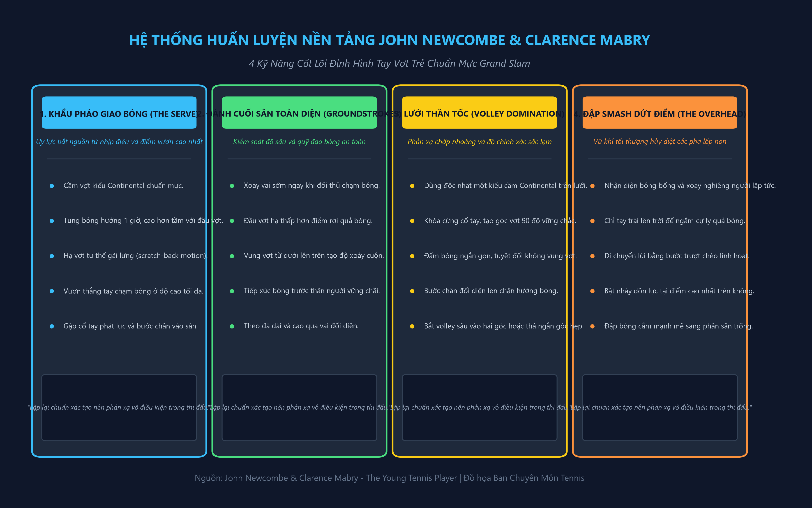
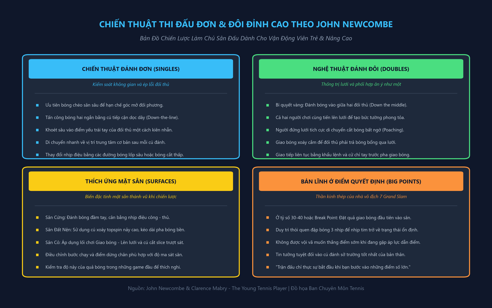
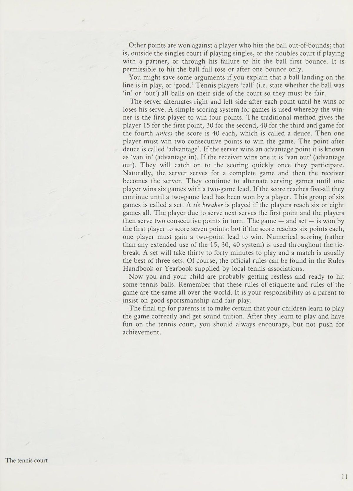
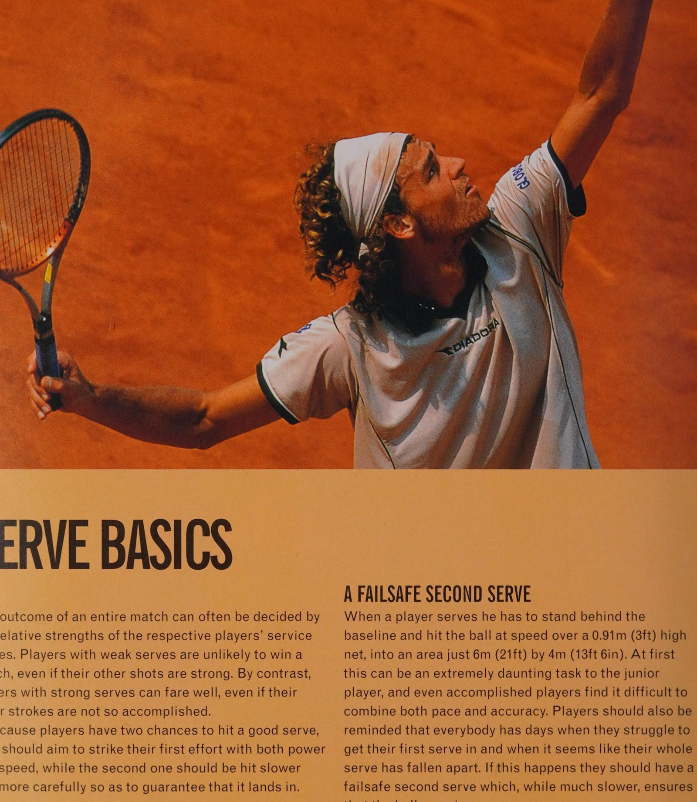
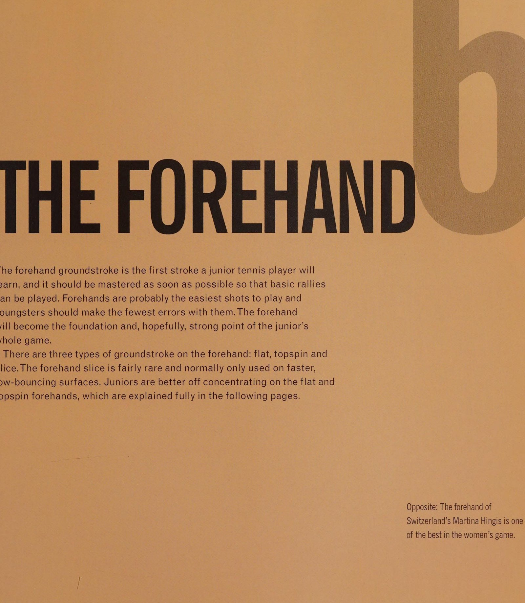
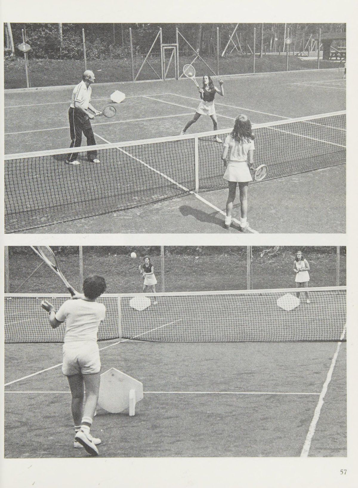
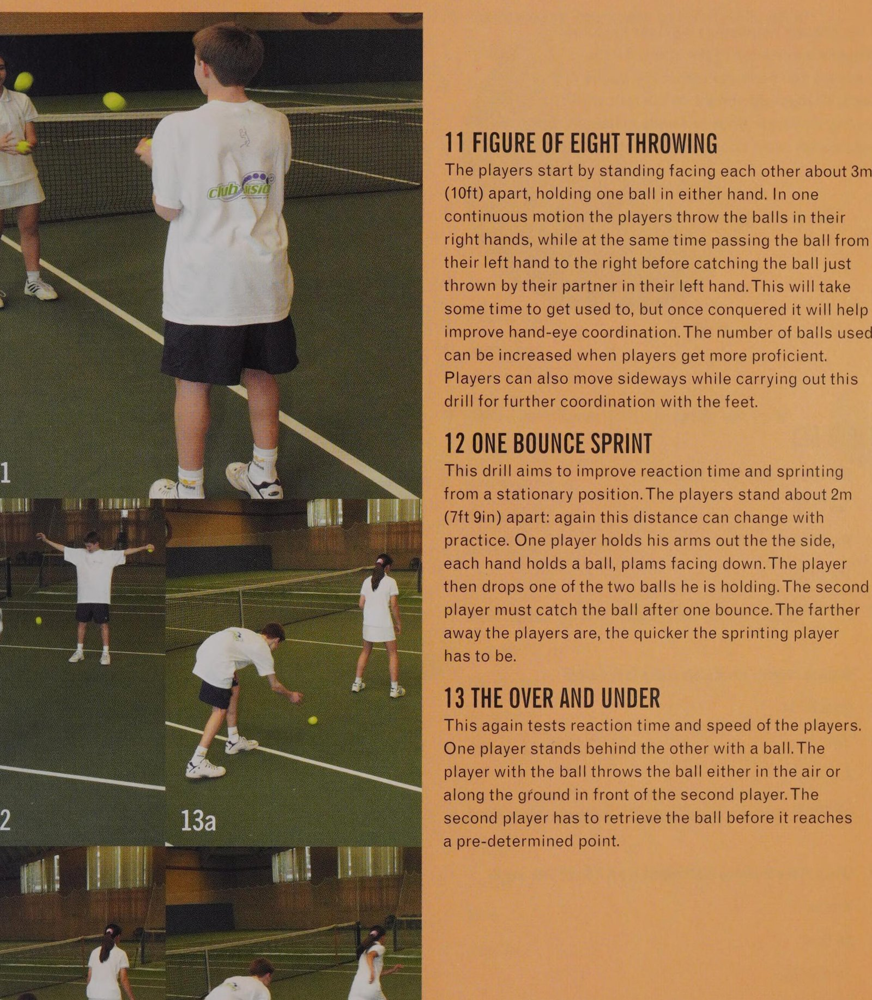
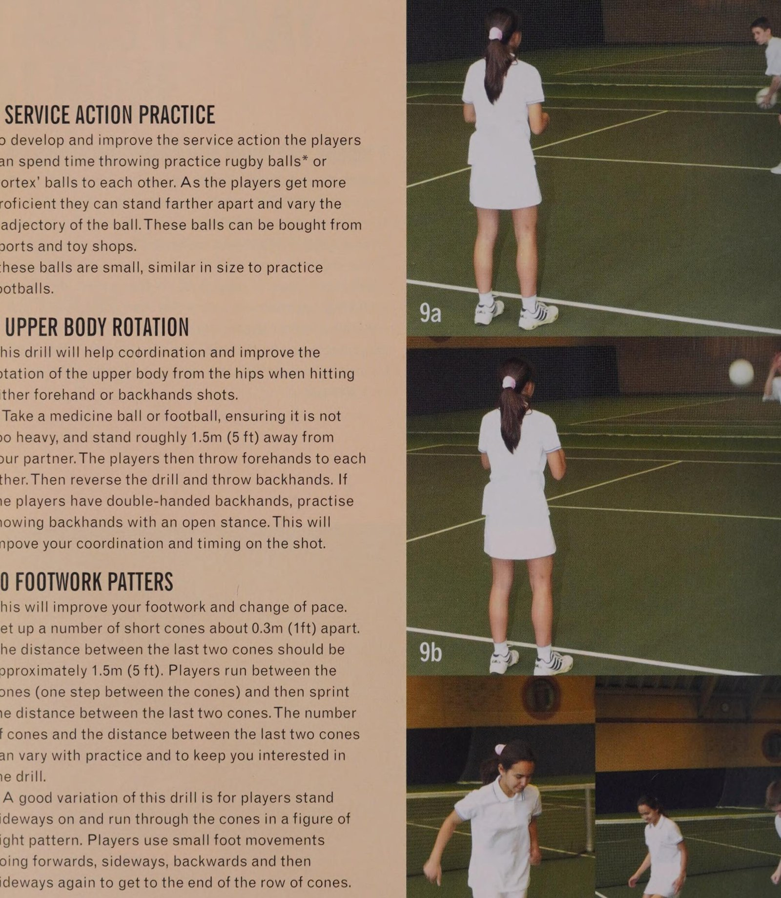

Tay Vợt Trẻ Toàn Diện: Cẩm Nang Huấn Luyện Căn Bản & Nâng Cao
Bản dịch Việt ngữ này chỉ dùng cho mục đích học tập cá nhân, phi thương mại. Bản quyền tác phẩm gốc thuộc về tác giả và nhà xuất bản.
Khái Lược Về Quần Vợt, Lịch Sử & Các Giải Grand Slam
Tennis là một trong những môn thể thao phổ biến và có ảnh hưởng sâu rộng nhất trên thế giới. Đi đến bất kỳ quốc gia nào, từ Azerbaijan đến Zaire, từ Antigua đến Zimbabwe, và bạn chắc chắn sẽ thấy: sớm hay muộn bạn cũng sẽ băng qua một sân tennis. _ Tennis cũng được nam giới ưa chuộng không kém. 'và phụ nữ, và - với con trai và con gái. Bạn có thể bắt đầu chơi ngay khi. bạn có thể bước đi và bạn có thể tiếp tục chơi đùa cho đến tuổi già. Một người đàn ông ở Đan Mạch vẫn đang thi đấu thường xuyên ở tuổi 101. Bạn có thể chơi trên xe lăn và có một chuyến tham quan chuyên nghiệp dành cho những tay vợt tennis trên xe lăn. Tennis cũng là một môn thể thao đòi hỏi rất ít bóng là tất cả những gì cần thiết để chơi trò chơi ở cấp độ cơ bản. Ngay cả khi bạn không có sân tennis và không có đối thủ để thi đấu, bạn luôn có thể đánh bóng vào một bức tường gạch. Những người mới bắt đầu thường thấy tennis là một môn thể thao phức tạp và khó chịu, nhưng ngay khi tay vợt đánh cú đánh trúng đích đầu tiên của mình, họ nhận ra tại sao lại có nhiều người đam mê môn thể thao này đến vậy. Cuốn sách này sẽ giúp các huấn luyện viên cấp dưới và học sinh của họ đánh giá cao niềm vui của tennis. Nó ; es cung cấp: thông tin về mọi thứ từ nơi chơi và cách tận dụng tốt nhất các thiết bị tennis, đến chiến thuật, nghi thức và cách phát triển các trận đấu ee eh win. Có rất nhiều cách khác nhau của abana và Song Ngư tôi tennis. Các hướng dẫn trong cuốn sách này rất rõ ràng và đơn giản, cung cấp nền tảng kiến thức cơ bản về môn thể thao này. Để tiến lên các cấp độ cao hơn, tay vợt thể thao cũng nên đầu tư vào các bài học từ một huấn luyện viên có trình độ. Những tay vợt trẻ _ phải đánh giá cao rằng ‘nguồn điện tốt hơn: fen đi kèm với giá trị cao hơn:
quyền truy cập vào các khía cạnh khác nhau của môn thể thao này, từ lịch sử đến chiến thuật cũng như cách thức và thời điểm thực hiện mỗi lượt đánh. bao gồm lịch sử ngắn gọn của trò chơi, thông tin chi tiết về bốn giải đấu lớn tạo nên Grand Slam và hướng dẫn về các tài nguyên tennis trên internet. đưa ra lời khuyên về việc lựa chọn tốt nhất cho tay vợt trẻ. Nó cũng giải thích các bề mặt sân khác nhau và loại trò chơi nào phù hợp nhất với từng loại, cách bố trí sân, luật chơi và cách tính điểm, cũng như các tiêu chuẩn hành vi mong đợi của tay vợt. Lời khuyên thực tế bao gồm cách tìm kiếm một câu lạc bộ tennis khuyến khích các tay vợt trẻ và cách chọn huấn luyện viên phù hợp, những điều cơ bản về tennis cạnh tranh và cách đối phó với chấn thương. thực tế là đánh bóng: khởi động, cách cầm vợt và mục đích của việc hất bóng trước trận đấu. chiến thuật, chiến lược và lựa chọn cú đánh, lùi lại hay vào lưới. Các cuộc tập trận được đưa vào để giúp tay vợt đưa ra những quyết định như vậy một cách tự nhiên. Sau khi hiểu được những điều cơ bản về chiến thuật, người đọc sẽ chuyển sang các cách đánh khác nhau và cách nắm bắt các chi tiết như cách cầm vợt và thế đứng chính xác để cải thiện cách chơi cơ bản của trẻ. cú tiếp đất, cú vô lê, cú lốp bóng, cú sút xa và cú smash (overhead) cũng như cách thức và thời điểm sử dụng từng loại để phù hợp với chiến thuật đã học. động tác chạm đất cơ bản, cú vô lê và lốp bóng — để thực hiện, cũng như cách thực hiện cú cắt bóng và thảo luận về ưu và nhược điểm của việc sử dụng cú trái tay (backhand) hai tay. trò chơi: sự khác biệt giữa đánh đơn và đánh đôi, hợp tác với đối tác và cách điều chỉnh các kỹ năng đã có được cho phù hợp. đàn em có thể sử dụng để cải thiện kỹ năng, khả năng phán đoán, phối hợp tay và mắt và mức độ thể lực chung. Cuối cùng, một Bài kiểm tra thú vị sẽ kiểm tra xem học sinh đã học được bao nhiêu.
TẤT CẢ VỀ TENN Có hàng nghìn vận động viên tennis chuyên nghiệp, nhưng chính những tay vợt ưu tú, chẳng hạn như tôi Pete Sampras, Andre Agassi, Martina Hingis, Tim Henman và chị em nhà Williams nt, mới là những người thường truyền cảm hứng cho giới trẻ tham gia trò chơi. Và tại sao không? Đối với những người đạt đến đỉnh cao của tennis chuyên nghiệp, phần thưởng sẽ rất lớn. Những tay vợt hàng đầu đi du lịch khắp thế giới, kiếm được số tiền lớn và tận hưởng địa vị người nổi tiếng. Vì vậy, thông điệp * gửi tới tất cả Agassis và những người muốn trở thành Williamses đầy tham vọng rất rõ ràng: Hãy lấy một cây vợt và một quả bóng rồi ra ngoài đó và chơi.
ĐÂU CHƠI Hầu hết các thị trấn lớn đều có ít nhất một câu lạc bộ tennis nơi tay vợt có thể tham gia môn tennis cạnh tranh và huấn luyện có tổ chức. Ở một số quốc gia, bao gồm Anh, Pháp, Đức, Mỹ và Úc, tennis phổ biến đến mức ngay cả những thị trấn nhỏ hơn cũng có câu lạc bộ tennis. Nhưng trước khi trả tiền để tham gia, bạn nên chơi trên các sân công cộng chỉ để hiểu rõ trò chơi. Các công viên thành phố thường có sân tennis với giá thuê tương đối rẻ. Tennis được coi là môn thể thao mùa hè hoặc ‘thời tiết đẹp’, nhưng những tay vợt tận tâm sẽ chơi ngay cả khi bên ngoài trời rất lạnh. Chỉ cần trời không mưa hoặc quá gió tay vợt vẫn có thể tận hưởng một trò chơi vui nhộn. Ở những quốc gia có mùa đông khắc nghiệt, những tay vợt nhạy bén sẽ trau dồi kỹ năng của mình tại các trung tâm tennis trong nhà trong những tháng lạnh hơn. Ngược lại: Kể từ khi bị chấn thương vài năm trước, Monica Seles đã phải điều chỉnh lối chơi của mình để có thể cạnh tranh một lần nữa. Bên trái: Trung tâm tennis ở địa phương của bạn có thể trông không ấn tượng như thế này, nhưng hầu hết các thị trấn đều có ít nhất một sân dành cho công chúng.

VÀ NGUỒN GỐC CỦA | TENNIS Hai người Anh, Thiếu tá Henry Gem và Thiếu tá Walter Wingfield, đã phát minh ra tennis vào năm 1858. Hai Thiếu tá đánh dấu các đường trên một bãi cỏ ở Edgbaston, Birmingham, Anh và gọi nó là 'sân tennis trên cỏ'. Trong nhiều thế kỷ trước đó, các tu sĩ và thành viên hoàng gia châu Âu đã chơi một phiên bản của trò chơi mà ngày nay được gọi là 'tennis thực sự' trên các sân khép kín giống như tu viện tu viện. Mãi cho đến khi Gem và Wingfield hợp tác vào giữa thế kỷ 19, tennis mới được chuyển ra ngoài và trên sân cỏ. Các sân tennis trên cỏ đầu tiên có hình dạng giống như một chiếc đồng hồ cát, tức là ở đường cuối sân rộng hơn so với ở lưới. Năm 1874, Thiếu tá Wingfield nộp đơn xin cấp bằng sáng chế cho môn thể thao mới của mình với tựa đề Sân mới và / được cải tiến để chơi trò chơi tennis cổ xưa. Anh ấy gọi môn thể thao này là 'Sphairistike', nhưng nhanh chóng chọn một thuật ngữ dễ phát âm hơn nhiều: 'tennis trên sân cỏ'. Trò chơi này nhanh chóng trở nên phổ biến với tầng lớp quý tộc thời Victoria, những người thường chơi nó trong các bữa tiệc ngoài vườn. Đến tháng 5 năm 1875, tennis sân cỏ đã trở nên phổ biến đến mức tay vợt quyết định đã đến lúc phải đặt ra những quy tắc phù hợp cho môn thể thao này. Câu lạc bộ Cricket Marylebone, nơi đã quản lý các quy tắc của tennis thực sự, đã ban hành một bộ quy tắc, cơ sở của nó vẫn được sử dụng cho đến ngày nay. Cùng năm đó, Câu lạc bộ Croquet toàn nước Anh ở Wimbledon, phía tây nam London, đã giới thiệu môn tennis sân cỏ cho các thành viên của mình. Hai năm sau, vào thứ Hai ngày 9 tháng 7 năm 1877, câu lạc bộ tennis nổi tiếng nhất thế giới tổ chức chức vô địch đầu tiên. Một nhà khảo sát 27 tuổi tên là Spencer Gore là nhà vô địch đầu tiên. Tuy nhiên, phải đến năm 1884, phụ nữ mới được phép thi đấu tại Wimbledon. Chậm rãi nhưng chắc chắn, tennis sân cỏ đã trở nên phổ biến trên toàn thế giới. Năm 1881, Giải vô địch đầu tiên được tổ chức tại Mỹ. Mười năm sau đã đến lần đầu tiên
GIỚI THIỆU VỀ TENNIS Giải vô địch Pháp, và năm 1905 là Giải vô địch Úc khai mạc. Ngày nay, cùng với Wimbledon, ba giải đấu này (US Open, French Open và Australian Open) được gọi chung là Grand Slam của tennis. Giải đấu đồng đội quốc tế dành cho nam, Davis Cup, đã diễn ra từ năm 1900. Môn thể thao tennis sân cỏ đã bỏ từ 'bãi cỏ' khỏi tên gọi của nó từ nhiều thập kỷ trước, một phần vì giờ đây sân có thể được xây dựng từ nhiều loại vật liệu khác nhau (Xem trang 26-9). Ngày nay môn thể thao này phổ biến đến mức hầu hết các quốc gia trên thế giới đều có hiệp hội tennis riêng. Liên đoàn tennis quốc tế có gần 200 quốc gia thành viên, và ATP (liên đoàn các tay vợt nam) và WTA (liên đoàn các tay vợt nữ) có các tay vợt đến từ hơn 100 quốc gia. Tennis hiện nay chắc chắn là một trong những môn thể thao phổ biến nhất trên thế giới.
Đối diện: Rene Lacoste của Pháp, người thống trị tennis Pháp những năm 1920, vô địch Wimbledon năm 1925 và 1928. Trái: Vận động viên Suzanne Lenglen, đến từ Pháp, người từng 6 lần vô địch Wimbledon từ năm 1919 đến 1925, là siêu sao đầu tiên vô địch tennis nữ. |)
CÁC GIẢI ĐẤU LỚN Các giải đấu chuyên nghiệp quan trọng nhất trong tennis là bốn giải Grand Slam hàng năm. Tháng Giêng chứng kiến Giải Úc mở rộng, được tổ chức tại Công viên Melbourne ở Melbourne. Vào cuối tháng 5 và đầu tháng 6 có giải Pháp mở rộng, được tổ chức tại Roland Garros ở Paris. Cuối tháng 6 và đầu tháng 7 là thời điểm nổi bật của lịch tennis. Đó là thời điểm các tay vợt hàng đầu đổ về Câu lạc bộ Toàn Anh ở Wimbledon để tham dự giải đấu về mặt kỹ thuật được gọi là 'Giải vô địch', nhưng thường được gọi là 'Wimbledon'. Grand Slam cuối cùng trong năm là US Open tại Flushing Meadows ở New York vào cuối tháng 8 đầu tháng 9. Bên cạnh các giải đấu chuyên nghiệp có cả tay vợt nam và nữ này, hàng trăm giải đấu tennis cấp độ thấp hơn giúp tạo nên Giải ATP (Hiệp hội tennis chuyên nghiệp) dành cho nam và Giải WTA (Hiệp hội tennis nữ) dành cho nữ. Một số sự kiện quan trọng hơn có sự tham gia của cả nam và nữ, nhưng phần lớn là các giải đấu dành cho một giới tính. Các giải đấu ATP và WTA được tổ chức trên toàn thế giới, mang tennis đẳng cấp nhất đến các địa điểm ở những địa điểm khó có thể ngờ tới như Uzbekistan, Indonesia và Qatar. Các giải đấu của cả nam và nữ đều đạt đến đỉnh cao là chức vô địch cuối năm dành cho tất cả các tay vợt hàng đầu. Các vận động viên chuyên nghiệp cũng thi đấu trong các giải đấu đồng đội quốc tế. Trong môn thể thao dành cho nam có giải Davis Cup cực kỳ nổi tiếng, đây là một sự kiện của giải đấu được diễn ra quanh năm và trên toàn thế giới. Các đội phải vượt qua các giải đấu để lọt vào Nhóm Thế giới ưu tú, đội chiến thắng trong nhóm này được tuyên bố là quốc gia vô địch Davis Cup. Đối với phụ nữ có Fed Cup, được tổ chức tương tự như Davis Cup. Không có nhiều quốc gia tranh tài ở nội dung dành cho nữ nhưng nó cũng có tính cạnh tranh gay gắt không kém. Top: Venus Williams là một nửa của bộ đôi xuất sắc người Mỹ, chị em nhà Williams, những người đã giúp L vô địch nhiều giải đấu giữa họ. r Trái: Gustavo Kuerten của Brazil là một trong những vận động viên nổi tiếng nhất ở Nam Mỹ. 1 GIỚI THIỆU VỀ TENNIS Aa i :

TENNIS TRÊN INTERNET Internet là phương tiện lý tưởng cho người hâm mộ thể thao vì tin tức, kết quả và nhận xét có thể được đăng lên các trang web ngay lập tức. Có hàng nghìn trang web tennis, nhiều trang web dành riêng cho tin tức và kết quả; những người khác gắn bó với các câu lạc bộ người hâm mộ tay vợt, trong khi một số cung cấp thông tin về các cửa hàng quần áo và vợt, các kỳ nghỉ huấn luyện và tennis. Điểm hay của World Wide Web là nó không ngừng thay đổi và phát triển. Tuy nhiên, do sự phát triển không ngừng này nên không thể đưa ra danh sách đầy đủ các địa điểm tennis. Điều tốt nhất nên làm là tìm kiếm trên Internet bằng một trong nhiều công cụ tìm kiếm có sẵn rộng rãi, nhưng để giúp bạn bắt đầu, đây là một số trang web tennis tốt nhất và phổ biến nhất:
TIN TỨC VÀ KẾT QUẢ Có hàng trăm trang web cung cấp tin tức và kết quả từ các giải đấu tennis. Bạn không thể sai lầm với hai trang web chính thức dành cho các giải đấu dành cho nam và nữ: www.atptennis.com www.wtatour.com Các trang web trên bao gồm thông tin và số liệu thống kê phong phú về các tay vợt chuyên nghiệp, nhưng nếu bạn chỉ muốn có kết quả thì bạn nên thử www.stevegtennis.com, trang này thường có kết quả trận đấu nhanh hơn các trang web chính thức. Hầu hết các giải đấu lớn hơn đều có trang web riêng (ví dụ: www.wimbledon.com, www.usopen.org, www.ausopen.org, www.frenchopen.org). Các trang web này chứa thông tin thực tế, tỷ số và số liệu thống kê, đồng thời một số trang còn có lời khuyên về cách mua vé giải đấu.
PLAYER FANCLUBS Các trang web câu lạc bộ người hâm mộ rất phổ biến trên khắp thế giới thể thao và tennis cũng không ngoại lệ. Nhiều trang web được sản xuất chuyên nghiệp và được xác nhận chính thức ... những trang khác kém ấn tượng hơn. Hãy thử những điều này để bắt đầu: www. mhingis.com www.kournikova.com www.gugakuerten.com.br www.thewilliamssisters.com Có rất nhiều món hời khi mua hàng dẫn đầu thị trường, nhưng nếu bạn sống bên ngoài Hoa Kỳ, chi phí giao hàng có thể rất cao. www.tennis-warehouse.com www.golfandtennisworld.com www.e-rackets.com www.LTA.org.uk/onlineshop Www.pwp.com
COACHING Hầu hết các trang web hướng dẫn tennis đều có trụ sở tại Hoa Kỳ. Điều này không hoàn toàn đáng ngạc nhiên vì có nhiều tay vợt Mỹ trong top 100 thế giới hơn bất kỳ quốc gia nào khác. Hãy thử các trang web sau để biết các mẹo huấn luyện: www.tennisone.com www.tennis.com www.aproch.com
CƠ QUAN QUẢN LÝ QUỐC GIA Nhiều cơ quan quản lý quốc gia có trang web với các liên kết hữu ích đến các câu lạc bộ, huấn luyện viên và huấn luyện, tennis trường học, lời khuyên cho người mới bắt đầu và các cuộc thi khu vực và quốc gia. Trong số đó có: www. fft.fr www.tennis.se www.usta.com www.lta.org.uk www.tennis.org.nz www.satennis.co.za www.tennis-aus.com.au www.federtennis.systex.it www.dansktennisforbund.dk www.deutschertennisbund.com www.canoe.ca/SlamTennisCanada & i § = be
Trang Thiết Bị, Quy Chuẩn Sân Bãi, Cách Tính Điểm & Văn Hóa Ứng Xử
NGHIÊM TÚC Tay vợt không cần phải chi một số tiền lớn vào quần áo, giày tennis và trang phục phù hợp. Tất nhiên, đối với những tay vợt quan tâm đến vẻ sang trọng của trang phục hơn là kỹ năng và thể lực, vẫn có khả năng lớn để chi mạnh tay cho bộ trang phục mới nhất và những đồ dùng vô nghĩa.
BÓNG TENNIS Mặt hàng dụng cụ tennis được tay vợt mua thường xuyên nhất là quả bóng tennis khiêm tốn. Tuy nhiên, tay vợt không nên chọn phương án rẻ nhất. Những quả bóng đắt tiền hơn, chất lượng cao hơn thường đáng giá hơn vì chúng không chỉ bền hơn mà còn nảy tốt hơn. Có hai loại bóng tennis chính trên thị trường: bóng có áp suất và bóng không có áp suất. Tất cả tay vợt chuyên nghiệp và nhiều tay vợt nghiệp dư đều sử dụng những quả bóng có áp suất (những quả bóng được đựng trong ống kín có chứa khí bên trong), mặc dù thực tế là những quả bóng này mềm hơn nhanh hơn những quả bóng không có áp suất. Bóng có áp suất dễ kiểm soát hơn và có nhiều ‘cảm giác’ trên dây vợt hơn bóng không có áp suất, cứng hơn và bật ra khỏi dây nhanh hơn. Quả bóng quan trọng khác trên thị trường là quả bóng tennis mới lớn hơn. Tại thời điểm viết bài, những quả bóng này vẫn đang được thử nghiệm và không được sử dụng trên đường đua chuyên nghiệp. Ngược lại: Các thiết bị cơ bản cần thiết cho môn tennis bao gồm vợt, bóng, giày, quần áo và tất nhiên là một chiếc túi để đựng mọi thứ vào trong.
VỢT Mua vợt atennis có thể là một đề xuất khó khăn đối với những người chưa quen. Khi bước vào một cửa hàng thể thao, người mới bắt đầu hoặc tay vợt cấp dưới sẽ phải đối mặt với hàng dãy vợt đầy màu sắc, đắt tiền và có vẻ phức tạp, mỗi chiếc dường như đưa ra giải pháp cho những sai sót trong trò chơi của mình... nhưng nên chọn cái nào? Tất nhiên có một số mối tương quan giữa giá cả và giá trị, tức là bạn càng trả nhiều tiền thì vợt càng tốt. Nhưng đây không phải là toàn bộ câu chuyện. Tay vợt nên quan tâm đến việc tìm kiếm một cây vợt phù hợp với nhu cầu của mình và cảm thấy thoải mái khi cầm trên tay. Những tay vợt nghiêm túc với môn tennis của mình nên cân nhắc chi tiêu nhiều nhất có thể, nhưng điều quan trọng là họ phải có được một cây vợt phù hợp với tiêu chuẩn chơi của mình. Một cửa hàng vợt chuyên nghiệp sẽ có thể đưa ra lời khuyên cho hầu hết ngân sách và nhu cầu. Về cơ bản có năm loại vợt tennis chính: vợt rẻ tiền; vợt dành cho người mới bắt đầu hoặc người nâng cao; vợt của tay vợt câu lạc bộ; vợt chuyên nghiệp; và vợt trẻ. a UIPMENT, SÂN VÀ Nghi thức @ KHUNG VỢT: vợt hiện đại được làm bằng than chì, carbon hoặc kết hợp các vật liệu composite nhẹ nhưng chắc chắn. @ DẢI BUMPER: Phần trên cùng của khung vợt được bọc một dải nhựa giúp tránh làm hỏng vợt khi bị cạo trên bề mặt sân. @ DÂY: dây vợt được làm bằng nylon hoặc vật liệu nhân tạo tương tự (rất hiếm khi là ruột cừu). Dây dọc gọi là dây chính, dây ngang gọi là dây chéo. @ GROMMETS: đây là những vỏ nhựa nhỏ để luồn dây qua đó. @ VIBATION DAMPENER: miếng cao su này ngăn chặn những rung động ở đầu vợt di chuyển xuống cánh tay của tay vợt. Nó có thể giúp ngăn ngừa khuỷu tay tennis. @THROAT: khu vực giữa đầu vợt và cán vợt. @ TAY CẦM: cái này có nhiều độ dày khác nhau @ GRIP: cái này bao phủ tay cầm và mang lại sự kết nối mềm, dính giữa tay và vợt. @® BUTT: phần đế của cán vợt.
VỢT GIÁ RẺ Nên tránh vì chúng không cho phép tay vợt tiến bộ và tiến bộ. Thích hợp để chơi tennis thông thường trong công viên thành phố nhưng không dành cho bất kỳ ai có khát vọng thi đấu. VỢT CỦA NGƯỜI MỚI BẮT ĐẦU HOẶC NGƯỜI CẢI TIẾN TỐT Đây luôn là những loại vợt tiên tiến nhất về mặt kỹ thuật. Chúng được thiết kế để giúp tay vợt giải quyết (hoặc ngụy trang) những thiếu sót kỹ thuật trong trò chơi của họ. Chúng thường có khung rất dày (để giúp giảm độ rung khi đánh lệch tâm và tăng lực cho các cú đánh) và đầu cực lớn (để giúp người mới tập có diện tích đánh lớn hơn trên dây). Đôi khi vợt thuộc loại này cực dài để có phạm vi tiếp cận nhiều hơn và có cơ hội nhận giao bóng tốt hơn. VỢT CỦA NGƯỜI CHƠI CÂU LẠC BỘ Được thiết kế dành cho những tay vợt thường xuyên đánh bóng tốt. Chúng có thể đắt tiền nhưng có xu hướng ít mánh lới công nghệ hơn so với vợt dành cho người mới bắt đầu.
VỢT CHUYÊN NGHIỆP Thiết kế rất cơ bản vì người sử dụng hầu như luôn đánh bóng hoàn hảo, ngay chính giữa dây.
VỢT CƠ SỞ Hầu hết các thương hiệu đều cung cấp nhiều loại vợt cấp cơ sở, nhỏ hơn, ngắn hơn và có tay cầm mỏng hơn. Nên khuyến khích các tay vợt trẻ bắt đầu với vợt cấp cơ sở, nhưng nhiều huấn luyện viên và phụ huynh muốn nhanh chóng chuyển chúng sang vợt dành cho người lớn để tránh chi phí phải mua vợt thay thế thường xuyên. Tất cả tay vợt nên được khuyến khích chọn một cây vợt có tay cầm có kích thước phù hợp để có thể cầm thoải mái. Lý tưởng nhất là khi tay vợt đặt bàn tay chơi của mình xung quanh cán vợt, khoảng cách giữa đầu ngón tay cầm và lòng bàn tay phải rộng bằng một ngón tay. Tay cầm sai kích cỡ có thể gây chấn thương như khuỷu tay tennis.
DÂY VÀ ĐỘ CẮM Không nên đánh giá thấp tầm quan trọng của dây vợt tốt. Dây là bộ phận của vợt tiếp xúc với bóng và do đó, chúng rất quan trọng trong việc kiểm soát bóng. Nhiều tay vợt hàng đầu nhận thức sâu sắc tầm quan trọng của việc có dây vợt chất lượng nên họ quyết định thay dây vợt mới ngay khi mua. Cách làm này không kỳ quái như người ta tưởng, vì dây xuất xưởng thường có chất lượng thấp và vợt có thể đã nằm trên kệ hàng nhiều tháng. Hầu hết các chuyên gia về vợt, câu lạc bộ tennis và các cửa hàng thể thao lớn đều cung cấp dịch vụ buộc dây. Dây chất lượng tốt có thời lượng chơi khoảng 50 giờ trước khi độ chính xác của cú đánh bị ảnh hưởng. Tuy nhiên, nếu một tay vợt đánh bóng rất mạnh, dây có thể bị đứt trước khi hết 50 giờ. Một số tay vợt đánh bóng nhẹ nhàng có thể chơi trong nhiều tháng mà không làm đứt dây, nhưng cuối cùng họ sẽ bắt đầu nhận thấy hiệu suất giảm sút. Tương tự, nếu vợt không được sử dụng trong vài tháng thì độ căng của dây sẽ giảm đi.
4... \ Fauipmenr, Courts ano EniQuerte sald ja Sf fa ale la PT2STaI IISA CAUGSE 45G/1 25MM
Ngược lại: Dây vợt được làm bằng vật liệu nhân tạo như nylon hoặc đôi khi là ruột cừu. Đúng: Bộ giảm chấn rung có thể giúp ngăn ngừa khuỷu tay do chơi tennis. z eS
BỘ TẢI XUỐNG RUNG si ihe Nhiều tay vợt chèn một miếng cao su nhỏ vào giữa =~ 5 ti ks dây ngang thấp nhất và cổ vợt =) c 4, mặc dù chúng có thể được đặt ở bất kỳ đâu bên ngoài khu vực x i Ss chéo của vợt. Cái gọi là 'bộ giảm chấn Ee 4 +' này giúp vợt không bị rung quá nhiều ® khi đánh bóng. Việc sử dụng bộ giảm rung không chỉ mang lại cú đánh mượt mà hơn, sạch hơn mà còn giúp
B BỘ TẢI XUỐNG RUNG tránh khuỷu tay tennis, vì nó ngăn sóng xung kích lan truyền Ste 0) ! đưa vợt xuống các khớp ở cánh tay của tay vợt. GRIPS Tay cầm của vợt được quấn quanh Ve . ; xử lý, quan trọng hơn nhiều người nghĩ. ALLEL CZBLAF là sự kết nối giữa tay vợt và vợt và nó có thể ảnh hưởng rõ rệt đến khả năng kiểm soát. Chất liệu cầm vợt phải thấm mồ hôi từ lòng bàn tay và giúp tay vợt cầm vợt thoải mái. Có hai loại tay cầm có sẵn. Rl A eS Đầu tiên là có 'tay cầm thay thế', ey: về cơ bản là một miếng vật liệu dày nee fa an fa 4, 2 SS bọc trực tiếp lên cán vợt 2LALADLS CLPLAT
- d i - sau khi tay cầm cũ đã mòn. Thứ hai, : Q << tay vợt có thể chọn một 'tay cầm quá mức', đó là 6 Re được bọc bên trên tay cầm ban đầu hoặc tay cầm thay thế D C cj để làm cho nó hơi , > tôi tS lớn hơn hoặc để tạo cảm giác cầm nắm chống trượt. Điều quan trọng là tay vợt phải mua vợt có tay cầm đúng kích cỡ. Khi tay vợt khép tay lại trên cán vợt, giữa đầu ngón tay nắm và lòng bàn tay phải rộng bằng một ngón tay. Nếu tay cầm quá nhỏ, nó có thể được chế tạo bằng tay cầm quá mức. Báng cầm sai kích cỡ sẽ ảnh hưởng đến cú đánh của tay vợt và có thể khiến tay vợt bị ln (CORAIWIAK GCUSHICIN
SBSTOSIISD Phía trên và bên trái: Tay cầm cho phép tay vợt giữ vợt an toàn, thoải mái. Sal lOLaS aL AT INT gây ra khuỷu tay tennis.
MỘT ORAIVAK HẤP DẪN
GIÀY TENNIS Những tay vợt tennis giỏi di chuyển trên sân theo mọi hướng trong suốt trận đấu, vì vậy họ cần giày chất lượng cao, vừa nhẹ vừa hỗ trợ tốt. Tay vợt nên mua giày dành riêng cho tennis vì tất cả các loại giày khác, bao gồm cả giày chạy bộ, không được thiết kế cho chuyển động sang ngang khi chơi tennis. Việc đi giày sai cách gần như chắc chắn sẽ gây phồng rộp và có thể dẫn đến chấn thương bàn chân nghiêm trọng. Rất ít cửa hàng thể thao cung cấp nhiều loại giày dành riêng cho tennis, vì vậy tay vợt có thể thấy họ phải đến một cửa hàng chuyên dụng để có được đôi giày tốt nhất. Nhiều tay vợt tennis kéo ngón chân của họ khi giao bóng, và nếu phần này của giày không được gia cố chắc chắn thì nó sẽ nhanh chóng bị mòn. Hầu hết các sân tennis trên thế giới đều cứng nên giày tennis phải có đệm hỗ trợ ở gót chân và đế để hỗ trợ di chuyển và giúp ngăn ngừa chấn thương. Tay vợt nên chú ý chọn mẫu đế phù hợp với loại mặt sân mà mình chơi. Một số loại giày sân cứng hoặc sân đất nện có đế hình xương cá, giày sân cỏ có đinh nhựa nhỏ và giày tennis trải thảm trong nhà có đế trơn. Những tay vợt chơi trên nhiều bề mặt khác nhau nhưng không muốn mua một đôi giày riêng cho mỗi bề mặt thì nên chọn những đôi giày sân cứng, loại linh hoạt nhất. Tuy nhiên, các câu lạc bộ độc quyền hơn có sân trải thảm trong nhà có thể yêu cầu các tay vợt phải mang giày trong nhà.
ÁO TENNIS Nhiều áo tennis hiện đại, đắt tiền được làm bằng vải thấm hút đặc biệt giúp hút hơi ẩm khỏi cơ thể tay vợt khi đổ mồ hôi. Áo sơ mi tennis chất lượng tốt cũng nên có cổ áo có thể lật lên để bảo vệ cổ tay vợt khỏi ánh nắng mặt trời. Các nút hoặc khóa kéo quanh cổ họng sẽ giúp kiểm soát nhiệt độ tốt hơn. Màu sắc của áo không thực sự quan trọng, mặc dù bộ đồ màu trắng sẽ mát hơn vào mùa hè và che giấu các vết mồ hôi tốt hơn bộ đồ màu tối. Tuy nhiên, một số câu lạc bộ tennis vẫn nhấn mạnh rằng các thành viên của họ mặc “quần áo chủ yếu là màu trắng”, mặc dù truyền thống này đang nhanh chóng lụi tàn.
QUẦN QUẦN TENNIS Một chiếc quần đùi tennis tốt phải đủ rộng thùng thình để tay vợt có thể tự do di chuyển khi chạy và duỗi người quanh sân. Túi phải đủ lớn để chứa một quả bóng dự phòng. Nhiều quần short nam hiện nay có lớp lót bên trong quần; nếu không, nên kết hợp quần đùi đạp xe hoặc quần lót thể thao với quần đùi.
VÁY VÀ VÁY TENNIS Váy và váy tennis vẫn là sự lựa chọn phổ biến của các tay vợt nữ. Chúng cho phép tự do di chuyển và có quần đùi kèm theo, hoàn chỉnh với các túi để đựng bóng khi giao bóng. Váy và đầm có nhiều kiểu dáng và màu sắc khác nhau. Thời trang hiện nay là những đường viền ngắn và màu sắc tươi sáng. Tuy nhiên, cũng như áo sơ mi và quần đùi, một số câu lạc bộ tennis có thể yêu cầu trang phục màu trắng, truyền thống hơn.
TÚI TENNIS Túi đựng dụng cụ giúp tay vợt giữ tất cả dụng cụ chơi tennis của họ ở cùng một nơi. Túi phải đủ dài để chứa ít nhất hai cây vợt (những tay vợt nghiêm túc sẽ luôn đến trận đấu với ít nhất hai cây vợt phòng trường hợp họ làm đứt dây của một cây vợt vào giữa trận đấu), một đôi giày và quần áo. Các túi riêng biệt để đựng bộ dụng cụ ẩm và đồ có giá trị cũng rất hữu ích. VỚ Tất tennis cần phải đủ dày để thấm mồ hôi và hỗ trợ mắt cá chân, nhưng không quá dày đến mức ảnh hưởng đến độ vừa vặn của giày tennis của tay vợt. Ngược lại: Sự khắc nghiệt của tennis chuyên nghiệp có nghĩa là tay vợt cần những đôi giày và quần áo dành riêng cho tennis bền chắc có khả năng ‘thấm’ mồ hôi khi thi đấu.
Đúng: Lưới phải ở độ cao chính xác (0,914m hoặc 3ft tính từ mặt đất ở giữa) trước khi bạn chơi. Nhiều câu lạc bộ cung cấp que đo.
THE COURT Các sân tennis có nhiều bề mặt khác nhau và được duy trì theo các tiêu chuẩn khác nhau, nhưng có một điểm chung là chúng đều có kích thước giống hệt nhau. Các phép đo chính thức của sân tennis là
dài 23,77m (78ft) và rộng 8,23m (27ft). Để đánh đôi, các đường biên dọc theo hai bên sân được sử dụng, do đó tăng chiều rộng của sân lên 10,97m (36ft). Việc xây dựng mặt sân sẽ ảnh hưởng tới tốc độ của mặt sân và độ nảy của bóng.
TỐC ĐỘ XÂY DỰNG TỐC ĐỘ NẢY đất sét chậm cao Đá phiến chậm cao đường nhựa trung bình bê tông trung bình trung bình/cao acrylic trung bình trung bình cỏ nhân tạo nhanh thảm thấp nhanh gạch nhựa thấp nhanh cỏ thấp nhanh thấp NB Phong cách chơi của tay vợt sẽ có một số ảnh hưởng đến độ nảy của bóng và tốc độ của nó khỏi bề mặt. UIPMENT, TÒA ÁN VÀ Nghi thức
THE NET Tay vợt nên được khuyến khích kiểm tra độ cao của lưới trước khi chơi, một số câu lạc bộ tennis cung cấp một thước đo - thường được treo trên cột lưới - cho mục đích này. Ở chính giữa (nơi tay vợt nên đo), lưới phải là 0,914m
(3ft) tính từ mặt đất và ở hai bên sẽ cao hơn một chút. Khi tay vợt có được kinh nghiệm, họ sẽ học cách nhận biết liệu lưới có ở độ cao chính xác hay không.
THIẾT BỊ ĐƠN Hầu hết các sân trên thế giới đều được đánh dấu là sân đôi (tức là có đường xe điện chạy dọc cả hai bên). Theo quy định, trong khi chơi đơn, lưới phải được đỡ giữa các đường xe điện bằng vật được gọi là 'gậy đơn'. Việc sử dụng gậy đơn ngăn cản tay vợt đánh những cú đánh rất thấp ở đường biên. Tuy nhiên, trên thực tế, tay vợt nghiệp dư hiếm khi bận tâm đến việc sử dụng gậy đơn. Gậy đánh đơn phải được đặt cách đường xe điện đơn 0,914m (38ft) về phía đường xe điện đôi và chúng đảm bảo rằng lưới có độ cao chính xác ở đường xe điện đơn. Đường cuối sân (baseline) của đường xe điện Bên trái: Tất cả các sân tennis đều được xây dựng theo cùng kích thước. Bề mặt sân có thể được làm bằng bất cứ thứ gì từ cỏ, đất sét đến nhựa đường hoặc thảm. chiều cao 91cm (3ft)
GIẢI PHẪU CỦA SÂN TENNIS Đối với những người chưa quen, các dấu hiệu trên sân tennis có thể có vẻ phức tạp; tuy nhiên, hầu hết những tay vợt cấp dưới dường như nhanh chóng nắm bắt được những yếu tố cần thiết của cách bố trí sân. Các đường kẻ trên sân phải dày từ 2,5cm (1in) đến 5cm (2in), ngoại trừ đường cuối sân (baseline) dày 10cm (4in). Các vạch chia sân thành các phần khác nhau, một số dành cho các trận đấu chung, một số dành cho việc giao bóng. Trong nội dung đánh đôi, tay vợt sử dụng toàn bộ sân, bao gồm cả đường xe điện. Trong đánh đơn, khu vực giữa các đường xe điện không phải là một phần của sân, vì vậy nếu bóng rơi vào đó thì nó sẽ bị 'ra ngoài'. Trong cả đánh đôi và đánh đơn, tay vợt giao bóng từ phía sau đường cuối sân vào ô giao bóng theo đường chéo đối diện. Nếu bóng không rơi vào đúng ô giao bóng thì quả giao bóng sẽ không được phép. Tay vợt không bao giờ được phép giao bóng vào đường xe điện.
GIẢI VÔ ĐỊCH RGA
INDIANAPOLIS và Ce Changi 5 i giải trí. Lại. fis
SÂN CỨNG Phần lớn các sân tennis trên khắp thế giới được gọi là 'sân cứng'. Sân cứng có thể được làm từ nhựa đường, bê tông, acrylic hoặc bất kỳ vật liệu phù hợp nào khác. Chúng đòi hỏi công sức đáng kể để bố trí nhưng khi đã lắp đặt xong, chúng hầu như không cần bảo trì ngoại trừ việc quét dọn thường xuyên. Điều tuyệt vời nhất khi chơi trên sân cứng là, trừ khi chúng là những mặt sân cũ, nứt nẻ, thường thấy ở các công viên công cộng, độ nảy hầu như luôn đúng. Trong số tất cả các bề mặt sân, sân cứng ưu ái nhất cho tay vợt toàn năng. Cho dù một tay vợt là chuyên gia về cơ bản hay thích chơi trên lưới, sân cứng không mang lại lợi thế đặc biệt nào. Để giành chiến thắng trên bề mặt này, tay vợt phải thay đổi cách giao bóng của mình, vì bóng nảy liên tục đến mức đối thủ sẽ sớm quen và trả lại bằng lực. Tay vợt cũng nên cố gắng thực hiện các cú vô lê sâu hơn nhiều về phía đường cuối sân và nói chung nên giữ số lần chạm đất ở mức thấp, đây là
vì nhiều mặt sân cứng cho bóng có độ nảy rất cao. Nếu một tay vợt không giữ được bóng ở mức thấp, đối thủ của anh ta sẽ có thể đánh trả mạnh và nhanh qua anh ta. Nhược điểm chính của sân cứng là chúng có bề mặt không thoải mái, có thể gây tổn hại đến chân của tay vợt và đặc biệt là các khớp nếu họ chơi trên đó thường xuyên.
SÂN ĐẤT SÉT Sân đất sét thường được làm từ cùng loại đất sét như gạch xây nhà. Chúng phổ biến ở các quốc gia có khí hậu nóng, nhưng vì chúng đòi hỏi rất nhiều kỹ năng để xây dựng và bảo trì nên chúng đắt tiền và thường chỉ được tìm thấy trong các câu lạc bộ độc quyền. Trong số tất cả các bề mặt sân tennis, mặt sân đất nện là mặt sân có tốc độ chậm nhất và do đó tay vợt có nhiều thời gian nhất để xếp hàng và đánh bóng. Rất khó để đánh bại những người chiến thắng hoàn toàn trên sân đất nện, và những tay vợt có thành tích tốt nhất trên mặt sân này là những vận động viên đánh cơ bản khỏe mạnh và thích những pha đánh bóng kéo dài. Bí quyết là tay vợt tiếp tục gây áp lực lên đối thủ ngay từ đường cuối sân, chờ đợi thời điểm thích hợp trước khi lao vào tiêu diệt. Những cú đánh rơi đặc biệt hiệu quả trên sân đất nện vì đối thủ luôn ở cuối sân và bởi vì, với nhiều xoáy xuống, bóng sẽ nảy thấp hơn và mềm hơn nhiều so với trên các bề mặt khác. Những tay vợt sân đất nện thông thường phải tập luyện chăm chỉ để rèn luyện thể lực vì các trận đấu kéo dài hơn nhiều. Một trận đấu ba set điển hình có thể kéo dài ba giờ trên sân đất nện. Tay vợt cũng nên tập trượt trên sân đất nện vì không giống như trên sân cứng nơi tay vợt phải giữ chân trên mặt đất khi đánh bóng, trên sân đất nện tay vợt có thể trượt vào cú đánh vì bề mặt lỏng lẻo. Đất nện ít gây đau chân hơn sân cứng.
SÂN TAY Cỏ tất nhiên là mặt sân được sử dụng tại Wimbledon và nhiều giải đấu giữa mùa hè khác ở Anh, nơi nó rất phổ biến, nhưng ở phần còn lại của thế giới, đây là mặt sân hiếm. Nhiều người cho rằng nó đã lỗi thời và không thực tế vì đòi hỏi phải bảo trì quá nhiều. Về lý thuyết, một sân cỏ rất cơ bản là dễ xây dựng nhất và rẻ nhất. Tất cả những gì cần thiết là một bãi cỏ bằng phẳng, một con lăn nặng, một ít sơn để làm đường và một lưới tennis. Điều này tốt cho những tay vợt không cầu kỳ về những cú nảy bóng không thể đoán trước, nhưng để có một bề mặt sân tốt, phải tốn rất nhiều tiền và thời gian để bảo trì. Tại một số câu lạc bộ tennis hạng sang, nhân viên sân cỏ dành cả năm để chăm sóc sân cỏ, mặc dù chúng chỉ được sử dụng bốn trong số mười hai tháng. Khi bóng nảy trên cỏ, nó trượt đi rất nhanh và rất thấp. Đó là một bề mặt ưa thích những tay vợt thích giao bóng và vô lê, cũng như những người hạnh phúc nhất trên lưới. Những tay vợt cơ bản nhận thấy rằng họ đơn giản là không thể tấn công một cách tự tin khi giao bóng trên sân cỏ, vì bóng nảy quá thấp. Các quả giao bóng lướt qua mặt cỏ nhanh đến mức việc thực hiện cú trả giao bóng bằng bất kỳ sức mạnh nào trở nên cực kỳ khó khăn. Những tay vợt giao bóng mạnh và nhanh rồi chạy ngay vào lưới để bắt vô lê hầu như luôn là những người giành chiến thắng trên sân cỏ. Đây là bề mặt mềm mại, tự nhiên và do đó ít gây tổn thương cho chân và khớp hơn so với sân cứng. ~ SÂN TRONG NHÀ Những tay vợt đủ may mắn được tiếp cận sân trong nhà thường không quan tâm đến mặt sân như thế nào. Thông thường các trung tâm tennis trong nhà có sân acrylic cứng hoặc sân trải thảm. Tại một số địa điểm tổ chức giải đấu trong nhà, người ta thậm chí còn sử dụng gạch nhựa để làm mặt sân. Chi phí thuê sân trong nhà cao hơn nhiều so với sân ngoài trời; điều này là do chúng đắt tiền để xây dựng và tốn kém về nhiệt và ánh sáng. Nhưng khi trời lạnh và mưa, tay vợt không có lựa chọn nào khác ngoài việc di chuyển vào trong. «=NORD/ = ‘ DRDDEUTSCHE LANDE:
CỎ NHÂN TẠO Cỏ nhân tạo đang trở nên rất phổ biến ở Anh cho tennis vì nó bền, ít cần bảo dưỡng và các khớp mềm hơn so với sân cứng. Tuy nhiên, hầu như không có giải đấu chuyên nghiệp nào được tổ chức trên mặt sân này. Khi còn mới, cỏ nhân tạo có độ bám tốt giống như đất sét cứng và rất thích hợp cho những tay vợt đường biên. Tuy nhiên, theo thời gian khi các lưỡi nhựa trở nên dẹt và mòn, bề mặt trở nên trơn hơn nhiều và tạo điều kiện thuận lợi cho người giao bóng (server) và người đánh vô-lê (volley). Nếu một tay vợt ngã trên cỏ nhân tạo, anh ta chắc chắn sẽ bị bỏng do ma sát rất đau.
MẶT BẰNG BẤT THƯỜNG Không có gì có thể ngăn cản câu lạc bộ hoặc trung tâm tennis xây dựng sân tennis bằng bất kỳ vật liệu nào. Có một trung tâm tennis ở Bombay ở Ấn Độ có sân làm bằng phân bò. Mỗi buổi sáng, những người quản lý bãi đất trải phân tươi lên sân và lăn phẳng. Xem ra mùi cũng không tệ lắm. Ở Úc, người ta thường chơi trên sân làm từ những con kiến bị nghiền nát, và ở Phần Lan vào mỗi mùa đông, một giải tennis trên băng được tổ chức trên một sân được đánh dấu trên sân băng. Tuy nhiên, tay vợt phải mang theo giày trượt băng của riêng mình. Bên trái: Sân trong nhà sẽ có nhiều bề mặt khác nhau, từ acrylic cứng đến gạch nhựa.
ăn Đúng: Tay vợt đầu tiên thắng sáu ván TRƯỚC (với cách biệt ít nhất . ! * hai ván so với đối thủ của họ) sẽ thắng set, Các trận đấu thường gồm ba hoặc năm set hay nhất
ĐÁNH GIÁ Các quy tắc của tennis có thể có vẻ phức tạp và
CÁC ĐIỀU KHOẢN CƠ BẢN CỦA TENNIS còn mơ hồ đối với người mới chơi. Nhưng sau một chút hướng dẫn, về nguyên tắc, trò chơi tennis rất đơn giản. Điểm là từ cha mẹ hoặc huấn luyện viên, hầu hết các tay vợt trẻ sớm nhận được điểm nhờ chiến thắng trong các pha giao bóng, bắt đầu khi một trong những người đánh cơ bản, tay vợt giao bóng cho người kia. Mỗi đấu thủ phải lần lượt đưa bóng qua lưới (trước khi bóng nảy hai lần) và sang phần sân đối phương. Tay vợt đầu tiên thất bại trong mục tiêu này sẽ mất điểm. Tay vợt được phép chuyền bóng hoặc để bóng nảy một lần, nhưng phải để quả giao bóng nảy một lần trước khi đánh bóng. Điều này nghe có vẻ đơn giản nhưng có một số quy tắc chính làm phức tạp mọi thứ và tất cả tay vợt nên hiểu. TRANG THIẾT BỊ, TÒA ÁN VÀ Nghi thức
WETHOGARTHER il
TÍNH ĐIỂM Trước khi bắt đầu trận đấu, tay vợt nên thống nhất về số hiệp họ sẽ chơi. Thông thường đàn em chơi tốt nhất trong ba set (tức là người đầu tiên thắng hai set), Để thắng một set, tay vợt cần thắng sáu game với cách biệt ít nhất hai game. Nếu tổng số điểm là sáu ván, hầu hết tay vợt đồng ý chơi tiebreak. Để thắng một trò chơi, tay vợt cần giành được bốn điểm trước đối thủ của mình, và cách biệt ít nhất hai điểm. Khi một tay vợt không có điểm, điểm của anh ta được gọi là 'tình yêu'. Với một điểm, số điểm của anh ấy là 15, ở hai điểm là 30, ở ba điểm là 40, và sau bốn điểm, trò chơi sẽ thắng. Nếu cả hai tay vợt đạt 40 thì điểm là 'deuce'. Bây giờ một trong hai tay vợt phải giành được hai điểm liên tiếp (sau một điểm họ được cho là có 'lợi thế') để giành chiến thắng trong trò chơi. Nếu một tay vợt có lợi thế nhưng lại mất điểm tiếp theo thì điểm số sẽ trở thành deuce.
THAY ĐỔI KẾT THÚC Tay vợt thay đổi kết thúc sau khi họ chơi một trò chơi và sau đó thay đổi lại sau mỗi trò chơi thay thế. Thực hành thay đổi đầu được sử dụng để tránh một tay vợt được hưởng lợi thế (ví dụ: gió hoặc mặt trời có thể tốt hơn ở một đầu) trong suốt trận đấu.
CHỌN AI BẮT ĐẦU Để quyết định ai giao bóng trước và ai đánh ở đầu nào, tay vợt thường 'xoay vợt'. Tung đồng xu cũng có hiệu quả như nhau, nhưng tay vợt hiếm khi có sẵn đồng xu khi ra sân. Hầu hết tay vợt sẽ hỏi đối thủ của mình ‘Lên hay xuống?’ trước khi xoay vợt trên đầu đối thủ và để vợt rơi xuống đất. Vợt được nhặt lên và kiểm tra logo trên báng vợt. Nếu biểu tượng hướng lên đúng, người gọi 'Lên' có thể chọn đầu nào để chơi hoặc có giao bóng hay không. Nếu đi lên sai thì người gọi 'Xuống' sẽ được chọn. Nếu người chiến thắng trong vòng quay chọn giao bóng trước thì tay vợt còn lại sẽ chọn giao bóng nào trước. Tay vợt thắng lượt quay có thể quyết định nhận giao bóng trước nhằm cố gắng bẻ giao bóng của đối phương và giành lợi thế sớm. Nếu người chiến thắng trong vòng quay chọn đầu nào sẽ chơi trước, thì tay vợt kia sẽ chọn giao bóng hay nhận trước. TUYỆT VỜI, TÒA ÁN VÀ Nghi thức Đúng: Trận chung kết Wimbledon năm 1980 giữa Bjorn Borg và John McEnroe chứng kiến một trong những trận tiebreak thú vị nhất từng diễn ra.

PHỤC VỤ Khi bắt đầu mỗi ván đấu, người giao bóng (server) phải đứng sau đường cuối sân ở phía bên phải của điểm giữa. Anh ta phải thực hiện cú giao bóng đầu tiên theo đường chéo vào ô giao bóng bên trái (hoặc 'deuce') ở bên kia lưới. Người giao bóng có hai cơ hội để đưa cú giao bóng của mình vào đúng ô giao bóng. Nếu tay vợt thất bại trong cả hai lần giao bóng được gọi là 'lỗi kép' và người nhận giao bóng sẽ giành được điểm. Sau khi chơi xong mỗi điểm, người giao bóng (server) sẽ luân phiên giữa ô giao bóng bên trái ('deuce') và bên phải ('lợi thế') của đối thủ.
CHƠI HÒA Nếu tổng số điểm đạt được trong sáu ván đấu, hầu hết tay vợt đồng ý chơi tiebreak. Tay vợt đến lượt giao bóng sẽ ghi điểm đầu tiên. Anh ta giao bóng một điểm ở phần sân bên trái. Sau đó, đối thủ của anh ta giao bóng hai điểm, giao điểm đầu tiên ở phần sân bên phải. Từ đó trở đi, tay vợt luân phiên giao bóng hai điểm (bắt đầu bằng cách giao bóng sai bên mỗi lần) cho đến khi một tay vợt đạt bảy điểm (với cách biệt ít nhất hai điểm). Tay vợt nên đổi đầu sau mỗi sáu điểm. Trong đánh đôi, tay vợt giao bóng tiebreak theo thứ tự giao bóng thông thường. Một số tiebreak có thể kéo dài rất lâu. Một trong những trận đấu dài nhất được diễn ra giữa Bjorn Borg và Premjit Lal tại Wimbledon năm
1973. Tỷ số giữa Borg và Lal lên tới 20-18 đáng kinh ngạc.
Đúng: Điều quan trọng là phải tôn trọng đối thủ và hòa nhã trong chiến thắng hay thất bại.
Nghi thức tennis Ngoài các quy tắc của tennis, còn có một số tập quán và phong tục khác mà tất cả tay vợt cần phải tôn trọng. Tennis phụ thuộc rất nhiều vào quy tắc nghi thức hoặc luật bất thành văn, giúp duy trì sự cân bằng thể thao trong trò chơi. Nếu tay vợt bỏ qua nghi thức tennis, họ sẽ bị coi là thô lỗ và không có tinh thần thể thao.
ĐÚNG GIỜ Tay vợt nên cố gắng đến sớm ít nhất 15 phút trước khi trận đấu bắt đầu. Sau đó, họ sẽ có thời gian để khởi động và chuẩn bị sẵn sàng tất cả dụng cụ của mình. Thuê sân tennis có thể tốn kém nên điều quan trọng là không được đến muộn. UIPMENT, TÒA ÁN VÀ Nghi thức
QUẦN ÁO Một số câu lạc bộ độc quyền nhấn mạnh rằng các tay vợt mặc quần áo chủ yếu là màu trắng. Ngay cả ở những câu lạc bộ không có quy định nghiêm ngặt về trang phục, tay vợt vẫn nên được khuyến khích mặc bộ quần áo tennis sạch sẽ và được công nhận. Bộ đồ tốt giúp thể hiện hình ảnh của sự tự tin và năng lực, đồng thời nó cũng được coi là dấu hiệu tôn trọng đối thủ. KNOCK-UP Tất cả các trận đấu tennis phải được bắt đầu bằng một trận knock-out kéo dài 5 phút. Trong thời gian này, tay vợt thực hiện những cú đánh nhẹ nhàng để dễ dàng chơi trước khi bắt đầu ghi điểm.
TRẢ LẠI BÓNG ĐI LẠI Việc đối phương gửi bóng lạc về đầu máy chủ giữa các điểm là lịch sự. Tay vợt nên hét lên ‘bóng đang tới’ để cảnh báo người giao bóng (server) rằng bóng đang trên đường quay trở lại. Tuy nhiên, anh ta không nên gửi bóng trả lại trong một thời điểm. Ví dụ: nếu quả giao bóng đầu tiên không thành công, người trả giao bóng (receiver) phải đánh bóng trở lại lưới hoặc bắt bóng và bỏ vào túi của mình. Người nhận bóng nên chống lại sự cám dỗ thực hành việc trả giao bóng bằng cách khoan bóng trở lại.
GỌI ĐƯỜNG DÂY Theo thông lệ, đấu thủ có phía sân mà bóng rơi vào phải nêu rõ nếu bóng rơi ra ngoài. Tuy nhiên, nếu hai tay vợt không đồng ý, họ nên đồng ý chơi lại điểm.
BÓNG MỚI Trước khi giao bóng với những quả bóng mới, người giao bóng (server) phải luôn đưa bóng cho đối thủ để người nhận có thể thấy rõ rằng một hộp bóng mới đã được bắt đầu.
CHƠI HỢP LÝ KHÔNG NGUY HIỂM Nếu một tay vợt trên lưới cho đối phương một cú đánh thật dễ dàng để đánh trả, tay vợt thứ hai không được đánh bóng mạnh thẳng về phía đối phương. Làm như vậy không trái quy định nhưng vừa không thể thao vừa nguy hiểm. Ngoài ra, tay vợt nên cảnh báo đối thủ nếu phát hiện bóng lạc lăn ở phía bên kia sân. Nếu một tay vợt vô tình giẫm phải bóng lạc, anh ta có thể bị thương. UIPMENT, TÒA ÁN VÀ Nghi thức
THỪA NHẬN SỰ XUẤT SẮC
VÀ VUI VẺ Nếu tay vợt thực hiện một cú đánh đặc biệt tốt, đối thủ của anh ta phải thừa nhận điều đó bằng cách nói với anh ta hoặc vỗ tay. Tương tự như vậy, nếu một tay vợt giành được điểm nhờ cú đánh may mắn đưa bóng vào lưới và rê bóng sang phần sân đối phương, thì tay vợt ngẫu nhiên đó phải xin lỗi.
TÔN TRỌNG CÁC TRẬN ĐẤU KHÁC Tay vợt không bao giờ được tiến vào sân trong khi những người khác đang chơi trên đó— ngay cả khi họ đến sân muộn mà họ đã đặt. Thay vào đó, họ nên đợi điểm hoặc trận đấu đang diễn ra kết thúc. Tương tự, nếu tay vợt phải băng qua một sân có người khác để đến sân của mình, họ nên đợi cho đến khi tay vợt nói xong điểm của mình và nên đi vòng ra phía sau sân. Hơn nữa, nếu một đấu thủ vô tình đánh bóng sang sân bị chiếm đóng bên cạnh, anh ta nên đợi cho đến khi các đấu thủ kết thúc quan điểm của mình trước khi yêu cầu trả lại bóng một cách lịch sự.
Ngược lại: Luôn giơ bóng mới để cho đối thủ xem trước khi giao bóng, Ngược lại bên dưới: Thật lịch sự khi thừa nhận khi đối thủ của bạn thực hiện một cú đánh rất khéo léo. Đúng: Luôn dọn sạch các thùng đựng bóng rỗng và rác khỏi sân ở sân . kết thúc trận đấu. Phía dưới bên phải: Đảm bảo bạn đóng cổng sân sau khi chơi để những tay vợt khác không tôi để mất bóng qua lưới.
THAY ĐỔI KẾT THÚC Khi đổi đầu, tay vợt nên đi vòng quanh lưới thay vì nhảy qua nó.
KHÔNG Chửi thề hoặc la hét Ngay cả khi tay vợt cảm thấy chán nản với lối chơi của mình, họ không bao giờ được nói chuyện hoặc la hét trong khi đang diễn ra một điểm vì điều đó có thể khiến đối thủ của họ mất hứng thú. Tay vợt không bao giờ được chửi bới, chửi thề. |
Nghi thức đôi hỗn hợp Khi thi đấu đôi nam nữ, mặc dù không phải vậy. trái với quy định, việc đánh mọi quả bóng có thể vào tay vợt yếu hơn được coi là phi thể thao.
CẢNH BÁO HƯỚNG Trong những trường hợp hiếm hoi (ví dụ: khi thời tiết rất gió) mà tay vợt quyết định giao bóng dưới cánh tay, họ nên cảnh báo đối thủ của mình. Tay vợt không làm như vậy sẽ bị coi là thô lỗ.
NGẠI NGỪNG TỰ NHIÊN Nếu một tay vợt cần đi vệ sinh trong khi đang thi đấu, anh ta nên đợi cho đến khi đến lúc thay đổi kết thúc trước khi xin phép. Nghi thức sau trận đấu Khi kết thúc trận đấu, các tay vợt nên tiến tới lưới và bắt tay đối thủ. Họ cũng nên giúp nhặt tất cả các quả bóng và dọn sạch rác bên cạnh sân.
CHIẾN LƯỢC Điều quan trọng là tay vợt phải có tâm trí đúng đắn khi chơi một trận đấu. Những tay vợt có kỹ thuật và lựa chọn cú đánh xuất sắc đôi khi có thể thua những đối thủ có lợi thế về mặt tinh thần hơn họ. Gần đây, các chuyên gia tennis hàng đầu đã bắt đầu tuyển dụng các nhà tâm lý học cũng như các huấn luyện viên và huấn luyện viên để hỗ trợ trận đấu tổng thể của họ. Dưới đây là một số mẹo chung về cách tay vợt có thể đánh bại đối thủ bằng tâm lý. Ngược lại: Nếu bạn cho rằng đối thủ của mình đã gọi sai đường dây thì trước tiên bạn nên hỏi họ một cách lịch sự xem họ có chắc chắn không. Nếu bạn cho rằng họ đang gian lận thì hãy nhờ bên thứ ba phân xử.
XỬ LÝ MẶT BẰNG Trong tennis, cũng như bất kỳ môn thể thao nào khác, tay vợt đôi khi sẽ gặp phải những đối thủ không hoàn toàn trung thực, thậm chí là gian lận trắng trợn. Lĩnh vực gian lận chính là gọi điện thoại. Các tay vợt thường nhắm các cú đánh của mình vào rìa sân để buộc đối thủ phải di chuyển nhiều nhất có thể và đánh trượt bóng. Điều này có nghĩa là có nhiều quả bóng rơi trên hoặc rất gần vạch. Một số tay vợt vô đạo đức muốn giành chiến thắng bằng bất cứ giá nào và nếu điều này có nghĩa là thực hiện các cuộc gọi xấu thì họ sẽ làm điều đó. Tay vợt nên phản ứng thế nào trước sự bất công này? Thứ nhất, tay vợt nên cho đối thủ của họ lợi ích của sự nghi ngờ, thay vì cho rằng anh ta đang gian lận. Có thể anh ta đã phạm sai lầm thực sự trong cuộc gọi điện thoại. Hỏi một cách lịch sự xem anh ấy có chắc chắn bóng đã ra ngoài không. Nếu tin rằng cuộc gọi đường dây là sai, tay vợt có thể yêu cầu cho phép. Tuy nhiên, nếu bóng ở bên lưới đối phương thì về mặt kỹ thuật, anh ta sẽ quyết định bóng vào hay ra ngoài. Nếu một tay vợt chắc chắn rằng đối thủ thực sự đang gian lận và anh ta từ chối cho phép, thì lựa chọn duy nhất còn bỏ ngỏ là gọi quan chức hoặc bên thứ ba. Tuy nhiên, trong mọi trường hợp, tay vợt không nên buộc tội đối thủ gian lận hoặc mất bình tĩnh. Điều tốt nhất nên làm là chơi tốt hơn nữa và chứng tỏ rằng kỹ năng vượt trội có thể khắc phục được tinh thần thể thao tồi.
RAIN Tay vợt nên tránh chơi dưới trời mưa bất cứ khi nào có thể. Ưu tiên hàng đầu trong những điều kiện như vậy là mang giày có độ bám tốt và chú ý không bị trượt trên mặt sân ướt.
THỜI TIẾT LẠNH Tay vợt phải luôn giãn cơ và làm nóng cơ trước khi thi đấu trong điều kiện lạnh. Họ cũng nên mặc nhiều lớp quần áo mỏng thay vì một lớp quần áo dày, vì điều này sẽ giữ ấm hơn và cho phép họ cởi bỏ nhiều lớp khi cơ thể nóng lên. Bộ đồ thể thao không được quá rộng đến mức cản trở chuyển động của chân hoặc tay.
MẶT TRỜI VÀ NHIỆT ĐỘ Kính râm hoặc mũ chóp sẽ giúp hạn chế ánh sáng chói của mặt trời khi tay vợt giao bóng. Tương tự như vậy, tay vợt nên thử lốp bóng đối thủ nếu anh ta buộc phải nhìn vào mặt trời. Tay vợt phải đảm bảo rằng họ luôn đủ nước trước, trong và sau khi chơi tennis, đặc biệt nếu trời rất nóng. Phần da hở phải được bôi kem chống nắng và tay vợt nên ngồi trong bóng râm giữa các trận đấu. Đôi khi thậm chí sẽ có một phần sân mờ ám, nơi tay vợt có thể trú ẩn trong thời gian ngắn giữa các điểm. Trong suốt trận đấu, loại biện pháp phòng ngừa này có thể tạo ra sự khác biệt thực sự đối với mức độ thể lực của tay vợt.
CHUẨN BỊ TRẬN ĐẤU Một số vận động viên tennis chuẩn bị kỹ càng cho trận đấu của mình đến mức họ đã phải làm việc chăm chỉ trước khi bước ra sân. Dưới đây là một số mẹo để đảm bảo rằng tay vợt có được cơ hội chiến thắng tốt nhất có thể. 1 Tay vợt nên ăn uống đầy đủ vào buổi tối trước trận đấu, tiêu thụ nhiều carbohydrate như mì ống, cơm và khoai tây. Họ cũng nên uống nhiều nước nhưng tránh đồ uống có chứa caffeine, chẳng hạn như cola, cà phê và trà. 2 Họ phải ngủ càng nhiều càng tốt. 3 Tay vợt nên ăn một bữa ăn đủ chất trước trận đấu (tuy nhiên, không ít hơn hai giờ trước khi trận đấu bắt đầu) và bổ sung nhiều chất lỏng cho cơ thể. 4 Họ nên kiểm tra và kiểm tra kỹ xem họ có mọi thứ họ cần trong túi đựng đồ nghề của mình hay không. Tay vợt nên mang theo ít nhất hai vợt (trong trường hợp dây bị đứt), quần short hoặc váy, bộ quần áo thể thao, áo sơ mi, tất, giày, băng thấm mồ hôi, mũ đội đầu, bóng, đồ ăn nhẹ có hàm lượng carbohydrate cao, nhiều nước hoặc đồ uống thể thao bổ sung nước, băng dán để làm phồng rộp và kem chống nắng. 5 Tay vợt nên đến địa điểm thi đấu thật sớm trước khi trận đấu bắt đầu. Thật thô lỗ khi để đối thủ phải chờ đợi. Điều quan trọng nữa là phải có thời gian để giãn cơ, khởi động và khởi động đúng cách. Nếu một tay vợt phải chạy thẳng vào sân ngay khi vừa đến nơi, anh ta sẽ có nguy cơ dính chấn thương cơ và có khả năng thua vài trận đầu tiên.
CHƠI HÒA Nếu một set có tất cả sáu ván, tay vợt phải tranh tiebreak để quyết định ai thắng set đó. Thông thường, tay vợt vẫn là người chịu áp lực tốt nhất sẽ giành chiến thắng trong tiebreak. Tay vợt phải nhớ hệ thống tính điểm và giao bóng trong tiebreak. Càng quen thuộc với nó, họ sẽ càng cảm thấy thoải mái hơn. Những cú giao bóng đầu tiên phải được thực hiện một cách an toàn, như ở giai đoạn này: trong hiệp đấu sẽ quá mạo hiểm để giành được quân Át trừ khi tay vợt đang dẫn trước tiebreak với tỷ số cách biệt lớn. Tay vợt nên phát hiện bất kỳ điểm yếu nào mà họ nhận thấy trong trò chơi của đối thủ. Mọi điểm đều được tính trong tiebreak, vì vậy tay vợt phải gây áp lực lên đối thủ của mình nhiều nhất có thể. Nếu một tay vợt thấy mình thua trong tình huống tiebreak, thì anh ta chỉ nên nghĩ đến một điểm mỗi lần. Anh ta nên quên tỷ số là bao nhiêu và tập trung vào việc giành được số điểm hiện có thể giành được. Để có bất kỳ cơ hội nào, anh ta phải hoàn toàn tập trung và giữ bình tĩnh.
KIỂM SOÁT NHIỆT ĐỘ Không giống như đánh đôi, vốn là một trò chơi đồng đội, trong đánh đơn, tay vợt chỉ có thể tự chịu trách nhiệm về bất kỳ sai lầm nào. Khi mọi thứ bắt đầu không ổn trong tennis, điều đó có thể khiến bạn cực kỳ bực bội. Tuy nhiên, dù có làm gì đi nữa, tay vợt cũng không được mất bình tĩnh. Họ phải giữ bình tĩnh và tập trung nếu muốn đưa trận đấu trở lại đúng hướng. Nếu nhìn vào thi đấu chuyên nghiệp, bạn sẽ nhận thấy rằng thường xuyên, những tay vợt biết kiềm chế tính khí của mình, ngay cả khi chịu áp lực cực độ, mới là những người có thể biến những tình huống vô vọng thành chiến thắng. Hãy nhìn Pete Sampras, Steffi Graf và Tim Henman: tất cả đều là những nhân vật cực kỳ điềm tĩnh. Điều quan trọng là các tay vợt phải giữ được kỷ luật. Nếu một tay vợt bắt đầu la hét và ném vợt đi khắp nơi, mọi người sẽ nhận thấy anh ta đang bối rối như thế nào và lợi dụng tình hình. Khi mọi thứ bắt đầu không ổn, tay vợt nên hít một hơi thật sâu, quên đi điểm cuối cùng và tập trung vào những khía cạnh tích cực trong trò chơi của mình. Ngược lại: Kiểm soát tính khí nóng nảy sẽ giúp bạn tập trung vào trò chơi của mình và sẽ cứu thiết bị của bạn = : khỏi những hư hỏng không đáng có.
LỜI KHUYÊN THỰC HÀNH
BẮT ĐẦU Không có độ tuổi chính thức nào mà trẻ em nên bắt đầu chơi tennis. Một số huấn luyện viên tin rằng trẻ nên chơi ngay khi chúng biết đi, trong khi những người khác lại thích đợi cho đến khi trẻ được sáu hoặc bảy tuổi. Nếu trẻ bắt đầu học quá sớm, trẻ có nguy cơ bị “kiệt sức” trước khi đến tuổi thiếu niên. Tuy nhiên, những người bắt đầu muộn có thể bỏ lỡ cơ hội đào tạo đầu năm có giá trị hoặc họ có thể bị cuốn vào một môn thể thao khác. Pete Sampras bắt đầu chơi tennis khi mới 7 tuổi, Andre Agassi đánh bóng lần đầu tiên khi mới 4 tuổi và Tim Henman chơi tennis khi mới 30 tháng tuổi. Các tay vợt nữ hàng đầu có độ tuổi xuất phát tương tự nhau. Không có câu trả lời đúng, và tất cả những gì cha mẹ có thể làm là tìm kiếm sự hướng dẫn từ một huấn luyện viên đáng kính, tốt nhất là người dạy trẻ. Lời khuyên tốt nhất là ban đầu hãy nhẹ nhàng giới thiệu cho trẻ chơi tennis, khuyến khích chúng nhiều hơn nếu chúng thực sự thích môn thể thao này. Quá nhiều áp lực khi còn trẻ có thể dẫn đến việc từ chối hoàn toàn môn thể thao này. Hầu hết các bạn trẻ bắt đầu chơi tennis với bố mẹ. Việc cha mẹ dạy dỗ không chính thức là điều bình thường khi trẻ đang thành thạo nghệ thuật đánh bóng cơ bản và làm quen với sân, nhưng sẽ đến lúc trẻ cần được học từ một huấn luyện viên có trình độ nếu muốn tiến bộ. Hầu hết các câu lạc bộ tennis và trung tâm tennis đều có chương trình huấn luyện trẻ. Trẻ em có thể tham dự những bài học này với tư cách là người mới bắt đầu, nhưng nếu chúng đã biết một chút về trò chơi khi đánh bóng với cha mẹ thì chúng sẽ có một khởi đầu thuận lợi quý giá. Tuy nhiên, các bậc cha mẹ dạy con nên lưu ý rằng những thói quen xấu hình thành từ khi còn nhỏ rất khó bỏ. Tennis không phải là một trò chơi dễ học. Ban đầu, nhiều trẻ gặp khó khăn chỉ để đánh được quả bóng. Tuy nhiên, họ phải được khuyến khích kiên trì vì một khi đã nắm được những điều cơ bản về phối hợp tay-mắt, họ sẽ sớm tiến bộ. Ngược lại: Cha mẹ sẽ cần khuyến khích con mình học tennis khi chúng mới bắt đầu chơi.
TENNIS THI ĐẤU
CẠNH TRANH MÀ KHÔNG ÁP LỰC Có nhiều tranh luận về thời điểm trẻ em nên bắt đầu chơi các môn thể thao cạnh tranh, và cuộc tranh cãi này chắc chắn cũng đã lan rộng khắp tennis. Điều quan trọng nhất là các bạn trẻ có thể tận hưởng môn tennis của mình mà không bị áp lực quá mức. Cha mẹ và huấn luyện viên nên để trẻ tiến bộ theo tốc độ riêng của chúng, hỗ trợ chứ không gây áp lực và căng thẳng. Có nhiều cách để trẻ học hỏi và phát triển với tư cách là một vận động viên tennis - và sự hỗ trợ của cha mẹ cũng như huấn luyện viên sẽ giúp trẻ đạt được thành công.
TƯƠNG LAI CỦA TENNIS Ngày càng có nhiều quốc gia chơi tennis, các cơ quan quản lý tennis nhận ra rằng thành công trong tương lai của môn tennis này phụ thuộc vào việc phát triển một trò chơi nhỏ mạnh mẽ, sôi động để thu hút tay vợt trẻ tham gia môn thể thao này và duy trì sự quan tâm của họ cho đến hết trận đấu. Cách tiếp cận khác nhau giữa các quốc gia: LTA ở Anh và USPTA và PTR(US) ở Hoa Kỳ đã chọn cách tiếp cận có cấu trúc với các giai đoạn được xác định rõ ràng cho phép tay vợt phát triển sự quan tâm và tiến tới toàn bộ trò chơi. Tại Anh, LTA đã khởi động lại Tennis ngắn và Tennis chuyển tiếp dưới dạng Tennis mini. Đây là một hệ thống gồm ba giai đoạn và khi trẻ tiến bộ, kích thước sân sẽ lớn hơn, bóng nảy nhanh hơn và độ dài của trận đấu tăng lên, giúp bạn dễ dàng chuyển sang trò chơi đầy đủ. Ở mỗi giai đoạn, trẻ em phải luôn có thể chơi một trò chơi mà chúng nhận thấy là có tất cả các tính năng của trò chơi thực sự (www.minitennis.com). Little Tennis ở Mỹ nhằm mục đích phát triển kỹ năng vận động và chơi tennis ở trẻ em từ ba tuổi trở lên. Tại Úc, Tennis Australia đã thiết kế Fastennis dành cho người mới bắt đầu ở mọi lứa tuổi. Hệ thống tính điểm khác nhau và định dạng nhanh chóng được thiết kế để làm cho trò chơi trở nên hấp dẫn và dễ hiểu.
CHỌN Huấn luyện viên Khi cha mẹ chọn một người hướng dẫn tennis cho con mình, họ phải luôn chọn một người có trình độ chuyên môn từ hiệp hội tennis quốc gia liên quan. Ở Anh, bằng cấp và giấy phép LTA là những thứ cần tìm, trong khi ở Hoa Kỳ, huấn luyện viên phải đăng ký với USPTA và PTR(US). Huấn luyện viên độc lập cũng có thể xuất sắc, nhưng nếu không có sự công nhận chính thức từ cơ quan quản lý, phụ huynh không thể chắc chắn về chất lượng giảng dạy. Điều quan trọng nữa là đứa trẻ phải hòa nhập với huấn luyện viên của mình. Một thanh niên không thích học tennis sẽ khó có thể tiến bộ trong môn thể thao này. Các bài học cá nhân giúp trẻ tiến bộ với tốc độ nhanh hơn, nhưng chúng đắt hơn và không phải lúc nào cũng thú vị như các bài học nhóm nhỏ, trong đó trẻ hòa nhập với các bạn cùng lứa.
LÀM VIỆC TENNIS VUI VẺ Nhiều bậc cha mẹ mắc sai lầm khi quá coi trọng việc chơi tennis của con mình. Không có gì có thể dập tắt sự nhiệt tình tự nhiên của một đứa trẻ hơn là sự thúc ép của cha mẹ. Trẻ em nên _ được khuyến khích chứ không bị áp lực, và chúng không cần phải trải qua hàng giờ học lặp đi lặp lại và những bài tập bất tận. Các trận đấu và bài học tennis phải thú vị, vì vậy phụ huynh nên cố gắng tìm một huấn luyện viên có cảm giác vui vẻ. Trẻ em cũng nên được khuyến khích theo đuổi các môn thể thao khác. Sự đa dạng giúp các bạn trẻ duy trì niềm đam mê tennis, vì họ cảm thấy sảng khoái khi chơi tennis sau khi nghỉ chơi một môn thể thao khác. Ngoài ra, các kỹ năng cần thiết cho các môn thể thao khác có thể giúp phát triển thể lực và khả năng phối hợp, cả hai đều quan trọng đối với tennis. Trước đây, nhiều tuyển thủ trẻ tài năng chuyên nghiệp (nói chung là các cô gái) đã phải chịu đựng tình trạng gọi là 'kiệt sức'. Đó là một vấn đề gây ra bởi việc những người trẻ tuổi bị ép chơi tennis quá nhiều đến nỗi tâm trí và cơ thể của họ trở nên mệt mỏi với môn thể thao này, buộc họ phải giải nghệ trước khi đạt đến đỉnh cao. Sự kiệt sức khó có thể ảnh hưởng đến những tay vợt nghiệp dư, nhưng nếu người lớn không biến tennis thành một môn thể thao thú vị cho trẻ em, họ sẽ sớm chán nản và tiêu cực về toàn bộ sự việc và hướng sự chú ý của họ sang một môn thể thao khác.
GIẢI ĐẤU CHƠI Hầu hết các câu lạc bộ tennis đều có liên kết với cơ cấu thi đấu cấp cơ sở. Một số câu lạc bộ thậm chí còn có đội trẻ của riêng họ đi theo nhóm đến các giải đấu. Các quốc gia khác nhau có những lộ trình khác nhau để các đàn em đi theo nếu muốn thi đấu các giải đấu. Hiệp hội tennis quốc gia phù hợp sẽ có thể cung cấp bất kỳ lời khuyên nào bạn cần. Tuy nhiên, các bậc cha mẹ nên nhận ra rằng bối cảnh giải đấu dành cho lứa tuổi thiếu niên có thể cực kỳ cạnh tranh và có thể phải di chuyển nhiều cũng như thời gian xa nhà. Kinh nghiệm thi đấu giải đấu sớm có thể hữu ích cho các tay vợt trẻ, nhưng lợi thế này phải được cân bằng với những căng thẳng mà nó gây ra cho tay vợt trẻ. Cha mẹ phải luôn ủng hộ con cái mình, dù chúng thi đấu ở cấp độ nào, luôn luôn khuyến khích. Cũng nên nhớ rằng, chỉ vì một đứa trẻ gặp khó khăn ở các giải đấu cấp cơ sở, sau này nó có thể tỏa sáng khi đã phát triển đầy đủ.
CHƯƠNG CHƯƠNG TENNIS Tennis là 2 môn thể thao có tác động mạnh và một số chấn thương có thể không thể tránh khỏi, nhưng nhiều chấn thương nhỏ có thể tránh được. Khi tham gia một trò chơi, bạn nên mặc một chiếc áo lót (và quần thể thao nếu bạn không mặc trang phục dạo phố ngay) để cơ bắp nguội dần
TAY VÀ CHÂN Giày và tất không vừa vặn có thể góp phần gây phồng rộp. Tay vợt trẻ tuổi phải luôn mang giày tennis vừa vặn. Không nên mang giày thể thao thông thường để chơi tennis. Các vết phồng rộp trên tay vợt có thể là kết quả của việc tay cầm vợt không đúng kích cỡ với tay tay vợt. Đây là một vấn đề dễ dàng khắc phục. CHUỘT Chuột rút có thể xảy ra trong hoặc sau khi chơi, nhưng nguyên nhân đều giống nhau: mất nước và mất muối trong cơ. Nó thường ảnh hưởng đến gân kheo và cơ bắp chân. Để ngăn chặn điều này, các tay vợt nên uống nhiều nước, cả trước và trong trận đấu hoặc buổi tập. Nếu bạn cảm thấy khát nghĩa là bạn đã bị mất nước rồi. Nước uống thể thao bù nước sẽ cung cấp lượng muối mà cơ bắp cần.
NÊN LÀM VÀ KHÔNG NÊN Khởi động đúng cách và mặc áo ấm khi thi đấu xong Không đứng loanh quanh trong bộ quần áo đẫm mồ hôi Mang giày và tất tennis vừa vặn Không chơi với giày tập bình thường Không chơi nếu bạn đang bị chấn thương Hãy đến gặp bác sĩ Nói chuyện với huấn luyện viên của bạn nếu bạn gặp vấn đề tái phát có thể liên quan đến một vấn đề nhỏ với kỹ thuật của bạn Uống nhiều nước hoặc đồ uống thể thao bù nước (điện phân) Không uống cà phê, trà hoặc nước ngọt đồ uống có chứa caffeine tôi lời khuyên thực hành
BONG KÍN MẮT CÁ NHÂN Đây là tình trạng khá phổ biến do tính chất tác động cao của tennis. Thường rất khó để phân biệt sự khác biệt giữa bong gân nặng và gãy mắt cá chân, vì vậy bất kỳ tay vợt nào bị chấn thương mắt cá nặng nên đến bác sĩ hoặc bệnh viện để kiểm tra. Tránh dồn trọng lượng lên mắt cá chân cho đến khi vết thương lành lại và không cố gắng thi đấu khi còn đau.
CHƯƠNG TRÌNH DÀI HẠN Nhiều tay vợt tennis bị chấn thương lâu dài hoặc tái phát, ảnh hưởng đến lưng, đầu gối, vai, khuỷu tay hoặc cổ tay. Bất kỳ vấn đề lâu dài hoặc tái phát nào đều phải được bác sĩ khám và tay vợt không nên thi đấu trừ khi được cho phép. Những vấn đề như khuỷu tay do chơi tennis và viêm gân ở cổ tay có thể mất nhiều tháng mới lành hoặc thậm chí có thể khiến bạn ngừng thi đấu hoàn toàn. Đôi khi những chấn thương lâu dài chỉ đơn giản là kết quả của một chấn thương vô tình không thể lành vì lý do này hay lý do khác, nhưng chúng cũng có thể xảy ra do lỗi kỹ thuật. Bất kỳ tay vợt nào nghi ngờ rằng, ví dụ, vấn đề ở lưng hiện tại có thể là kết quả của một vấn đề trong động tác giao bóng của mình thì nên thảo luận vấn đề đó với huấn luyện viên của mình. Một số tay vợt cố gắng tiếp tục thi đấu khi bị chấn thương đầu gối bằng cách đeo đồ hỗ trợ, nhưng điều này không được khuyến khích nếu không có lời khuyên y tế, đặc biệt đối với những tay vợt trẻ có xương vẫn đang phát triển.
BẮT ĐẦU QUT Một tay vợt trẻ đầy tham vọng chỉ cần bốn thứ: một cây vợt, một quả bóng, một sân và một người để đánh cùng. Hầu hết các thị trấn đều có ít nhất một sân tennis công cộng, vì vậy chỉ cần không quá ẩm ướt và nhiều gió là bạn có thể chơi tennis mà không cần phải di chuyển vất vả. Vợt và bóng tennis rẻ tiền có sẵn ở các cửa hàng thể thao ở khắp mọi nơi và đối với những tay vợt có ngân sách eo hẹp, vợt cũ thường có thể được tìm thấy ở các cửa hàng từ thiện. Về việc có ai đó để chơi cùng, vì tennis rất phổ biến nên luôn có ai đó trong số bạn bè hoặc gia đình sẵn sàng đánh với một tay vợt trẻ hơn. Ngược lại: Andre Agassi bắt đầu chơi tennis khi mới bốn tuổi. Trái: Venus Williams đã truyền cảm hứng cho nhiều trẻ em da đen trên khắp thế giới theo đuổi tennis.
Khởi Đầu Nền Tảng: Bài Tập Giãn Cơ & Hệ Thống Cán Cầm Vợt
” i© KÉO DÀI VÀ | KHỞI ĐỘNG “ifs Để giữ dẻo dai và tránh những chấn thương không cần thiết, điều quan trọng là các tay vợt phải giãn cơ thể, cả trước và sau trận đấu. Các tay vợt hàng đầu khởi động ít nhất 20 phút trước khi thi đấu, các tay vợt trẻ nên giãn cơ ít nhất 10 phút. Khi thời tiết lạnh, việc khởi động là vô cùng quan trọng vì cơ lạnh rất dễ bị chấn thương. Các tay vợt trẻ nên coi việc khởi động là một phần của thói quen trước trận đấu. 1 CHẠY BỘ VÀ TRƯỚC KHI GIẢNG DÃ Tay vợt nên bắt đầu bằng việc chạy bộ 5 phút quanh sân, điều này sẽ làm tăng nhiệt độ của các cơ và chuẩn bị cho chúng giãn cơ. Nó cũng sẽ làm tăng nhịp tim. Tay vợt nên chạy về phía trước, phía sau và sang ngang, giống như trong trận đấu. Tay vợt phải cẩn thận để không đung đưa chân tay khi duỗi, vì điều này có thể dẫn đến cơ bị kéo. Cơ thể phải được thả lỏng trong mỗi lần duỗi và vị trí cuối cùng phải được giữ trong khoảng mười giây. Động tác giãn cơ nên được lặp lại bốn hoặc năm lần cho mỗi bên của cơ thể, xen kẽ giữa trái và phải. 2 XOAY THÂN Tay vợt đứng hai chân rộng bằng vai. Anh ấy đặt tay lên hông và vặn hết cỡ sang phải. Vị trí này được giữ trong mười giây. Bài tập sau đó được lặp lại cho bên tay trái. 3 CƠ TAY Cơ tứ đầu là các cơ ở phía trước đùi. Đối với đoạn này, tay vợt phải dựa vào cột lưới hoặc vật thể ổn định tương tự để được hỗ trợ. Anh ấy nắm lấy mắt cá chân của mình và kéo nó lên về phía mông, đảm bảo rằng đùi trong và đầu gối của anh ấy vẫn gần nhau. Tay vợt phải tránh nghiêng về phía trước khi duỗi người. Thực hiện hai lần cho mỗi chân.
4 ĐÙI TRONG Tay vợt đứng hai chân dang rộng, ngón chân hướng về phía trước, một chân duỗi thẳng và đầu gối đối diện cong. Anh dần dần đặt toàn bộ trọng lượng của mình lên đầu gối đang cong và thả lỏng cơ thể xuống sàn. Bàn chân phải luôn đặt phẳng trên mặt đất. Một bài viết mạng có thể được sử dụng để được hỗ trợ thêm. Lặp lại ở chân kia. 3 Gân kheo Cơ gân kheo là cơ ở phía sau đùi, nếu không được khởi động đúng cách sẽ rất dễ bị tổn thương. Tay vợt phải ngồi trên mặt đất, uốn cong một chân sang một bên và duỗi chân kia ra phía trước, nằm phẳng trên mặt đất với các ngón chân và đầu gối hướng lên trên. Lưng phải được giữ thẳng càng nhiều càng tốt khi trẻ nghiêng người về phía trước để chạm vào ngón chân. 6 Bắp chân Cơ bắp chân là cơ nằm ở phía sau cẳng chân và chúng thường bị ảnh hưởng bởi tình trạng chuột rút và co giật. Tay vợt nên duỗi thẳng chúng bằng cách đứng trong tư thế đi với các ngón chân hướng về phía trước, một chân đưa ra sau và thẳng, chân còn lại hướng về phía trước và cong. Từ từ trọng lượng cơ thể được chuyển sang chân trước, trong khi gót chân sau được giữ phẳng trên mặt đất. 7 CÁNH TAY, KHUỶU TAY VÀ CỔ TAY Cánh tay của tay vợt đặt thẳng trước người với lòng bàn tay hướng lên trên. Anh ta dùng một tay duỗi cổ tay về phía sau và xuống (vị trí này được giữ trong mười giây). Sau đó, anh ấy duỗi cổ tay về phía trước và hướng lên trên về phía mình (cũng được giữ trong mười giây). Lặp lại bốn hoặc năm lần và cho cả hai tay. 8 CỘT SỐNG THẮT LƯNG Cột sống thắt lưng, là khu vực ở lưng dưới, chịu áp lực rất lớn khi giao bóng và đập bóng. Bàn chân phải được đặt cách nhau và tay đặt trên hông. Tay vợt từ từ cúi người về phía sau (không quá xa đến mức cảm thấy khó chịu), giữ đầu gối thẳng và hông đẩy về phía trước. Vị trí được giữ trong mười giây và lặp lại nhiều lần. 9 CƠ NỮA Cơ tam đầu là cơ bên dưới cánh tay trên. Tay vợt nên đứng, gập một tay ra sau đầu, tay kia nắm lấy khuỷu tay, kéo ngang và kéo xuống cho đến khi cảm thấy cơ tam đầu căng ra. Cánh tay không cầm vợt cũng phải được kéo căng. 10 NGỰC Cơ ngực là cơ nằm ngang phía trên ngực và chúng có thể được duỗi ra bằng cách đứng với một cánh tay dang rộng sang một bên, giữ vào lưới bên hoặc cột lưới. Tay vợt nghiêng người về phía trước bằng phần thân trên cho đến khi cảm thấy cơ căng. Tay vợt nên chú ý không duỗi quá nhiều vì có thể làm tổn thương cánh tay. 11 CƠ CỔ Tay vợt đứng dang hai chân, mặt hướng thẳng về phía trước. Dần dần anh cúi đầu xuống một bên, giữ cho vai ngang bằng. Lặp lại ở phía bên kia.
THE GRIPS Có hàng tá cách cầm vợt khác nhau trong tennis, phần lớn là do có hàng chục cú đánh khác nhau. Mỗi tay vợt sử dụng các cách cầm vợt khác nhau cho cùng một cú đánh, nhưng tốt nhất là người trẻ nên học cách cầm vợt cơ bản trước. Với sự tự tin và kỹ thuật được cải thiện, những cách cầm này có thể được điều chỉnh. Có ba cách cầm vợt cơ bản mà các tay vợt trẻ nên học: thuận tay (có thể là kiểu đông hoặc nửa tây), trái tay (có thể là một hoặc hai tay) và kiểu cầm dịch vụ hoặc kiểu cầm vợt 'chopper'. Hai loại đầu tiên lấy tên từ Hoa Kỳ, nơi các sân Ne ở bờ biển phía đông trước đây chủ yếu được làm bằng cỏ và cần một tay cầm cho phép tay vợt ne đạt được những cú đánh có độ nảy thấp, trong khi các sân ở bờ biển phía tây chủ yếu là cứng và cần một tay cầm giúp tay vợt có thể đạt được những cú đánh có độ nảy cao. MUA GRIP T0 KÍCH THƯỚC NÀO? Vợt tennis mới có nhiều kích cỡ tay cầm khác nhau. Tay vợt nên cố gắng mua vợt có cỡ cán vợt phù hợp với tay mình (xem trang 20), nhưng nếu họ thấy nó quá nhỏ thì có thể tăng thêm bằng cán vợt quá cỡ. Mặc dù không lý tưởng nhưng giải pháp này giúp tay vợt không phải mua vợt mới. Một số cha mẹ quyết định mua cho con mình một cây vợt có kích thước cán vợt quá lớn để bàn tay của trẻ có thể sử dụng được. Một lần nữa, điều này không lý tưởng, nhưng chi phí mua vợt mới có thể là yếu tố quyết định. Đừng quên rằng việc cầm vợt không đúng kích cỡ sẽ ảnh hưởng đến cú đánh của tay vợt và có thể gây ra bệnh khuỷu tay tennis.

1a CÁCH TAY TAY ĐÔNG ĐÔNG Tay vợt nên tưởng tượng rằng mình đang bắt tay với vợt. Hình chữ “V” giữa ngón cái và ngón trỏ phải thẳng hàng với cạnh bên phải của mặt trên của cán vợt khi đầu vợt được giữ thẳng đứng. Kiểu cầm vợt này hoàn hảo cho các cú thuận tay (forehand) phẳng hoặc xoáy lên. 1b CÁCH CÁNH TAY BÁN TÂY Để có được cách cầm vợt bán tây, tay vợt nên sử dụng cách cầm vợt phía đông và xoay nhẹ cán vợt trong tay sang trái. Hình chữ 'V' giữa ngón cái và ngón trỏ bây giờ sẽ thẳng hàng với cạnh bên trái của mặt bên phải của cán vợt. Cách cầm vợt này được sử dụng để đánh những quả bóng có độ nảy cao với xoáy lên. Các chuyên gia sân đất nện sử dụng cách cầm vợt kiểu Tây hoàn toàn để tạo ra nhiều xoáy lên hơn nữa. Để làm được điều này, họ thậm chí còn xoay cán vợt xa hơn về bên trái. 2a CÁCH CÁNH TRÁI Tay Điều này phù hợp với những tay vợt đánh trái tay chỉ bằng một tay. Tay cầm vợt được xoắn sang phải, sao cho hình chữ “V” giữa ngón cái và ngón trỏ thẳng hàng với cạnh bên phải của mặt trái của tay cầm vợt khi bạn giữ đầu vợt thẳng đứng. Những người trẻ cần thêm khả năng kiểm soát và sức mạnh trong cú đánh trái tay của mình có thể thích cách cầm vợt bằng hai tay. 2b Cách cầm vợt trái tay đôi (i) Tay vợt đặt tay phải của mình vào vị trí cầm vợt trái tay và đặt tay trái của mình ngay phía trên tay trái ở vị trí thuận tay phía đông sao cho hai tay bây giờ chạm vào nhau. Tay vợt có tầm với ít hơn so với cách cầm vợt trái tay bằng một tay, nhưng anh ta sẽ có được nhiều lực hơn trong các cú đánh của mình. 2c Cách cầm vợt trái tay đôi (ii) Tay vợt đặt cả hai tay ở vị trí cầm vợt thuận tay phía đông. Điều này cho phép đánh một cú đánh phẳng hơn và ít thay đổi hơn giữa cách cầm thuận tay và trái tay. Tay vợt cũng sẽ thấy việc ngụy trang cú đánh của mình dễ dàng hơn. 3 CÁNH DỊCH VỤ HOẶC CÁNH ‘CHOPPER’ Đối với cách cầm này, tay vợt nên tưởng tượng vợt là một cái rìu hoặc ‘chopper’. Hình chữ “V” giữa ngón cái và ngón trỏ phải thẳng hàng với cạnh bên trái của mặt trên của cán vợt khi bạn giữ đầu vợt thẳng đứng. Những người mới chơi sẽ thấy dễ dàng hơn khi bắt đầu giao bóng bằng cách cầm vợt thuận tay kiểu đông, nhưng điều này có thể được thay đổi thành cách cầm vợt cắt bóng khi họ có được sự tự tin.
THE KNOCK-UP Sau khi các tay vợt đã khởi động và giãn cơ, thông thường sẽ có một cú knock-up trước khi trận đấu bắt đầu. Không có quy tắc cứng rắn và nhanh chóng nào cho những pha knock-out trong môn tennis trẻ, nhưng các tay vợt có xu hướng làm theo sự hướng dẫn của các chuyên gia. Trong tennis chuyên nghiệp, tay vợt có năm phút để khởi động tất cả các cú đánh của mình. Họ thường chia thời gian này thành ba phút để thực hành các cú chạm đất, vô lê và đập bóng và hai phút để thực hành giao bóng.
THỰC HÀNH PHÁT GIAO Hai phút cuối cùng nên được dành rõ ràng để thực hành giao bóng. Để tránh nguy cơ chấn thương, tốt nhất là chỉ nên giao bóng luân phiên cho các đấu thủ. Một đấu thủ giao bóng ở phần sân bên trái (deuce), sau đó người kia giao bóng vào phần sân bên phải (có lợi). Một số tay vợt thích tận dụng cơ hội để luyện tập cú trả bóng cũng như cú giao bóng của mình. Điều này có thể hữu ích, bởi vì nếu một đấu thủ bước vào trận đấu đã trả lại một vài quả giao bóng của đối thủ, anh ta sẽ quen với việc đó hơn và do đó anh ta có nhiều khả năng bẻ gãy đối thủ ngay từ đầu trận đấu. Sau khi hạ gục xong, tay vợt nên quay vợt hoặc tung đồng xu để xem ai giao bóng trước và ai đánh ở đầu nào trước (xem trang 32).
Giao bóng là cú đánh khó học nhất trong tennis, và vì đây là cú đánh duy nhất mà tay vợt phải chơi nên nó cũng là cú đánh quan trọng nhất. Nhiều đàn em nhận thấy rằng họ có thể chơi những cú thuận tay (forehand) khá tốt, những cú trái tay (backhand) và vô lê ở mức trung bình, nhưng khi đến phần giao bóng, họ lại thất vọng. Điều quan trọng là các tay vợt trẻ phải dành thời gian rèn luyện kỹ thuật giao bóng của mình. Khi tennis lần đầu tiên bắt đầu vào thế kỷ 19, giao bóng được cho là sự khởi đầu bình đẳng và công bằng cho mỗi cuộc giao tranh. Tuy nhiên, tay vợt sớm bắt đầu hoàn thiện kỹ thuật giao bóng của mình, từ đó tạo cho mình lợi thế rõ rệt so với người nhận giao bóng. Trong tennis chuyên nghiệp hiện đại, lợi thế của người giao bóng (server) mạnh đến mức một trận đấu cạnh tranh có thể chỉ chứng kiến một hoặc hai ván đấu giao bóng. Điều quan trọng là phải thực hành cả giao bóng và giao bóng trả lại, đồng thời học cách chỉ đạo các cú giao bóng và trả bóng để gây khó khăn cho đối thủ trong việc đưa bóng qua lưới cho bạn. Các cuộc tập trận có thể giúp tay vợt trau dồi kỹ năng của mình để tự động thực hiện những cú đánh tốt nhất. Ngược lại: Pete Sampras người Mỹ có một trong những cú giao bóng tốt nhất quán trên thế giới. Với nó, anh đã giành được nhiều Grand Slam hơn bất kỳ tay vợt nam nào khác.
Làm Chủ Cú Giao Bóng & Kỹ Thuật Trả Giao Bóng
CÁCH PHỤC VỤ CƠ BẢN Kết quả của toàn bộ trận đấu thường có thể được quyết định bởi sức mạnh tương đối trong các ván giao bóng của tay vợt tương ứng. Những tay vợt có cú giao bóng yếu khó có thể thắng trận đấu, ngay cả khi những cú đánh khác của họ mạnh. Ngược lại, những tay vợt có cú giao bóng mạnh có thể đánh tốt, ngay cả khi các cú đánh khác của họ không thành công như vậy. Bởi vì tay vợt có hai cơ hội để thực hiện một cú giao bóng tốt, họ nên cố gắng thực hiện cú giao bóng đầu tiên bằng cả sức mạnh và tốc độ, trong khi cú giao bóng thứ hai nên được đánh chậm hơn và cẩn thận hơn để đảm bảo rằng cú giao bóng trúng đích.
MỘT CUỘC PHÁP PHÁP THỨ HAI THẤT BẠI Khi một tay vợt giao bóng, anh ta phải đứng sau đường cuối sân và đánh bóng với tốc độ trên lưới cao 0,91m (ft), vào khu vực chỉ 6m (21ft) x 4m (13ft 6in). Lúc đầu, đây có thể là một nhiệm vụ cực kỳ khó khăn đối với tay vợt cấp dưới và ngay cả những tay vợt đã thành thạo cũng cảm thấy khó kết hợp cả tốc độ và độ chính xác. Tay vợt cũng nên được nhắc nhở rằng mọi người đều có những ngày họ phải vật lộn để thực hiện được cú giao bóng đầu tiên và có vẻ như toàn bộ cú giao bóng của họ đã thất bại. Nếu điều này xảy ra, họ nên thực hiện cú giao bóng thứ hai không an toàn, mặc dù chậm hơn nhiều nhưng vẫn đảm bảo bóng đi vào lưới.
ĐỨNG Ở ĐÂU Trong nội dung đánh đơn, tay vợt giao bóng từ gần vạch giữa, phía sau đường cuối sân. Điều này có nghĩa là họ có thể bao quát toàn bộ sân khi đối thủ trả bóng và họ cũng có thể chạy nhanh vào giữa lưới nhanh hơn nếu họ chơi tennis kiểu giao bóng và vô lê. Tuy nhiên, tay vợt phải cẩn thận để đảm bảo rằng họ đứng đúng phía của điểm chính giữa; nếu vượt quá vạch sẽ phạm lỗi ở chân. Khi giao bóng vào ô giao bóng bên trái, tay vợt phải đứng bên phải vạch giữa, nếu giao bóng vào ô giao bóng bên phải thì phải đứng bên trái vạch. Tay vợt không bao giờ nên đứng giữa vạch trung tâm. Trong đánh đôi, người giao bóng (server) phải đứng sau đường cuối sân, ở giữa điểm giữa và mép trong của đường biên. Từ vị trí này, anh ta sẽ có thể bao quát khu vực giữa sân nếu đối thủ trả bóng ở đó, nhưng anh ta cũng có thể bao quát các đường biên. Cách cầm vợt Đối với cả cú giao bóng thứ nhất và thứ hai, tay vợt nên sử dụng cách cầm giao bóng hoặc kiểu cầm vợt 'chopper' (xem trang 56-7). Những người trẻ sẽ thấy dễ dàng hơn khi bắt đầu giao bóng bằng cách cầm vợt thuận tay kiểu đông, nhưng điều này có thể được thay đổi thành cách cầm vợt cắt bóng khi họ có được sự tự tin.
MẸO NHANH Ngược lại: Gustavo Kuerten của Brazil luôn có phong độ xuất sắc trên sân đất nện. Bên trái: Đảm bảo chân của bạn không chạm vào đường biên trước khi thực hiện cú giao bóng vì điều này sẽ cấu thành lỗi bàn chân.
PHỤC VỤ Những cú giao bóng tốt có những yếu tố chung sau đây đối với hành động ném CÁNH CAY Tay cầm phải là kiểu cầm chopper (xem trang 56-7), mặc dù khi mới bắt đầu, tay vợt có thể thấy dễ dàng hơn khi bắt đầu bằng cách cầm thuận tay và dần dần thay đổi nó khi anh ta tiến bộ hơn.
TƯƠI VÀ VỊ TRÍ Vị trí bắt đầu phải ở một góc 45 độ so với đường cuối sân (baseline), bàn chân và chân rộng bằng vai và trọng lượng dồn vào bàn chân trước. Anh ta phải ngăn chân mình chạm vào đường cuối sân hoặc bên trong sân trước khi đánh bóng, nếu không sẽ bị coi là lỗi bằng chân. Các em nhỏ thường quên quy tắc lỗi chân, vì vậy cần nhắc nhở các em trước khi bắt đầu thi đấu các trận đấu cạnh tranh rằng các tay vợt sẽ bị phạt, nhưng khi đó thói quen này khó có thể bỏ được.
CHUẨN BỊ ĐỂ PHỤC VỤ Trước khi giao bóng, tay vợt phải quyết định nơi mình muốn giao bóng và kiểu giao bóng đó. Một số tay vợt cầm hai quả bóng trong tay không giao bóng nhưng điều này là không nên. Tuy nhiên, tay vợt phải luôn giữ quả bóng thứ hai trong túi hoặc trong hộp đựng bóng, để nếu họ giao bóng lỗi, họ ngay lập tức có quyền truy cập vào quả bóng để thực hiện cú giao bóng thứ hai.
THE TOSS Nhịp điệu của hành động phải đơn giản và mượt mà. Hành động ném vợt và đặt bóng phải là một hành động. Cánh tay đặt bóng phải duỗi thẳng lên và thả bóng căng hết mức một chút về phía trước và phía bên vợt của cơ thể.
BACKSWING Khi bóng bay lên không trung, tay vợt thu cánh tay lại sao cho đầu vợt duỗi ra khỏi cơ thể vào tư thế ném với khuỷu tay cong (xem hình giữa).
ĐÁNH BÓNG Nhanh chóng nhưng nhịp nhàng, tay vợt vung vợt lên quá đỉnh đầu để đánh bóng ở phía trên và hơi ở phía trước người, tiếp xúc tại thời điểm bóng bắt đầu rơi trở lại mặt đất. Cơ thể và cánh tay của anh ta phải căng hết cỡ khi đánh bóng để mang lại độ cao tối đa cho cú giao bóng. Khi đánh bóng, đấu thủ nên cố gắng cong nhẹ cổ tay xuống để tránh giao bóng quá xa ô giao bóng của đối phương. (Vòng cong của cổ tay này được gọi là quay sấp.) THEO-THROUGH Cú đánh tiếp theo phải ở phía không cầm vợt của cơ thể và cho phép tay vợt di chuyển nhẹ về phía trước vào sân và sau đó sẵn sàng cho cú đánh tiếp theo của pha đánh bóng.
KHẮC PHỤC SỰ CỐ Nếu một đấu thủ liên tục giao bóng vào lưới, đường ném bóng có thể quá thấp hoặc quá xa về phía trước tay vợt, khiến góc mặt vợt quá đóng. Nếu bóng tiếp đất quá dài, vượt quá đầu ô giao bóng của đối phương, góc mặt vợt có thể quá hở, do đó có thể cần điểm tiếp xúc cao hơn hoặc điểm tiếp xúc xa hơn về phía trước.
NỔ BÓNG Hầu hết tay vợt đều nảy bóng vài lần trên mặt đất trước mặt họ trước khi giao bóng. Làm điều này sẽ hỗ trợ sự tập trung và giúp họ tập trung vào cú giao bóng. Hầu hết các cú giao bóng thứ hai đều được thực hiện với độ xoáy cao hơn và tốc độ ít hơn để đảm bảo cú giao bóng diễn ra suôn sẻ.
CÁC TÌNH HUỐNG ĐƠN:
PHỤC VỤ Giao bóng là một cú đánh khó nhưng cần thiết để thành thạo. Không có đường tắt. Tay vợt chỉ cần dành thời gian luyện tập kỹ thuật của mình nhiều lần. Một rổ bóng và một sân trống là cách tốt để một tay vợt trau dồi khả năng giao bóng của mình cho đến khi nó trở thành bản chất thứ hai đối với anh ta.
PHỤC VỤ MỤC TIÊU Lúc đầu, các tay vợt cấp dưới rất vui khi thực hiện được cú giao bóng của họ qua lưới và vào đúng ô giao bóng. Nhưng khi tay vợt tiến bộ và giỏi hơn, họ sẽ muốn bắt đầu đặt cú giao bóng của mình vào các phần khác nhau của ô giao bóng. Có ba vị trí mà tay vợt nên nhắm tới: góc trên cùng bên trái của ô dịch vụ; góc trên bên phải; và phần giữa phía trên. Hai vị trí đầu tiên sẽ buộc người nhận di chuyển sang trái hoặc phải, còn vị trí thứ ba sẽ đi thẳng vào cơ thể người nhận. Tay vợt càng thực hành cách đặt cú giao bóng của mình nhiều thì vũ khí đó sẽ càng trở nên nguy hiểm hơn.
Ngược lại: Martina Hingis không có cú giao bóng mạnh nhưng lại hiệu quả vì tính chính xác và biến hóa. Ở ĐÂU 10 PHỤC VỤ 10 Trái: Giao bóng vào cơ thể đối phương Khi một tay vợt cấp dưới đã phát triển đầy đủ một trong những cú giao bóng hiệu quả và hữu ích nhất của mình, anh ta sẽ có thể chọn có giao bóng cho những cú đánh mà một tay vợt có thể phát triển hay không. bên trái, bên phải hoặc giữa hộp dịch vụ. Nếu đối thủ của anh ta yếu hơn về phía thuận tay thì anh ta nên giao bóng về phía thuận tay của mình, và nếu anh ta yếu hơn về phía trái tay thì anh ta nên giao bóng về phía này. Nếu một đấu thủ có một cú giao bóng cứng, anh ta có thể muốn giao bóng vào người đối thủ. Kỹ thuật này ngăn cản đối phương có thời gian và không gian để đưa tay cầm vợt vào đúng vị trí để đánh trả.
BÀI TẬP GIAO BÓNG VÀ BÓNG CHUYỀN Mặc dù giao bóng và chuyền bóng là một chiến thuật nâng cao, nhưng tay vợt có thể muốn thử một số bài tập giao bóng và chuyền bóng. Tay vợt nên nhờ huấn luyện viên hoặc tay vợt có kinh nghiệm (nếu sẵn sàng và sẵn sàng) đứng bên kia lưới cho họ và trả giao bóng. Ngay sau khi giao bóng, tay vợt nên lao vào lưới và thực hiện cú vô lê. Đối tác cấp trên nên thay đổi cú trả bóng của mình - một số cao, một số thấp, một số ở giữa và một số ra ngoài - để đối tác cấp dưới phải tập trung thực hiện các cú vô lê. Điểm được trao cho mỗi cú vô lê thành công. Cũng cần lưu ý để tránh mắc lỗi ở chân khi giao bóng, vì các tay vợt trẻ thường mắc lỗi này khi háo hức lên lưới nhanh.
LOẠI PHỤC VỤ NÀO Có những lúc tay vợt không chắc chắn nên đánh một quả giao bóng thực sự khó hay một quả giao bóng an toàn. Lựa chọn phù hợp sẽ phụ thuộc vào tình hình trận đấu. Nếu một đấu thủ bị dẫn 0-40 và đây là lần giao bóng thứ hai của anh ta, thì rõ ràng việc đánh bóng quá mạnh sẽ là không khôn ngoan. Tuy nhiên, nếu tay vợt đang dẫn trước 40-0, thì anh ta có thể mạo hiểm và giành được quân át. Đó là lẽ thường tình, nhưng nó vẫn đáng được chỉ ra cho nhiều tay vợt cấp dưới. Ngay cả khi cú giao bóng của tay vợt không mạnh lắm, họ vẫn nên ném cú giao bóng tương đối nhanh, khó, chỉ để giữ đối thủ của họ cảnh giác.
PHỤC VỤ VÀ BÓNG CHUYỆN HOẶC Ở LẠI Một lĩnh vực khác mà đàn em phải đối mặt với tình thế tiến thoái lưỡng nan, đó là nên giao bóng và chuyền bóng hay ở lại sau vạch cuối sân sau khi họ đã giao bóng. Câu trả lời sẽ phụ thuộc vào cách họ giao bóng, phong cách chơi chung của họ, cách đối thủ trả bóng và họ đang chơi trên mặt sân nào. Một tay vợt có cú giao bóng mạnh nên cân nhắc việc chơi kiểu giao bóng và vô lê, chắc chắn là sau cú giao bóng đầu tiên của anh ta, tất nhiên trừ khi anh ta chơi trên một mặt sân rất chậm, chẳng hạn như đất nện, điều này sẽ làm mất đi sức mạnh của cú giao bóng của anh ta. Tuy nhiên, nếu một đấu thủ có cú giao bóng yếu và đối thủ của anh ta có xu hướng trả giao bóng rất mạnh, thì anh ta nên nghĩ đến việc ở lại sau đường cuối sân sau khi giao bóng. Cả hai phong cách chơi nên được thử khi bắt đầu trận đấu và nên theo đuổi phong cách thành công nhất. /\\ PHỤC VỤ VÀ TRẢ LẠI
PHỤC VỤ DƯỚI RA NE titi Đôi khi tay vợt thấy rằng dù họ có làm gì thì họ cũng không thể thực hiện được cú giao bóng của mình. Điều này xảy ra với hầu hết tay vợt, và đôi khi còn ảnh hưởng đến cả những tay vợt chuyên nghiệp. Nếu vẫn thất bại, phương án cuối cùng là tay vợt có thể cân nhắc thực hiện cú giao bóng dưới cánh tay. Martina Hingis đã từng áp dụng điều này. cách tiếp cận khi những cú giao bóng trên cao của cô ấy không hiệu quả trong trận đấu với Steffi Graf. Theo luật, tay vợt không bắt buộc phải nói với đối thủ rằng họ muốn chuyển sang giao bóng dưới cánh tay, mặc dù sẽ là thô lỗ nếu không làm như vậy. Vùng nách. chỉ nên được sử dụng trong những trường hợp rất đặc biệt, chẳng hạn như nếu mặt trời chiếu thẳng vào mắt tay vợt hoặc Hise ne tung bóng lên bị ảnh hưởng bởi gió mạnh và quả giao bóng đầu tiên của anh ta từ chối thực hiện. i Sử dụng dịch vụ thông thường hoặc tay cầm 'chopper'. Tay vợt phải cố gắng tạo ra càng nhiều cú giao bóng xoáy xuống càng tốt - để khi bóng tiếp đất, nó nảy rất thấp và ngắn. Bằng cách này, đối thủ của anh ta sẽ phải chạy nhanh về phía trước để đạt được quả giao bóng trước khi nó nảy lên hai lần. Để cho bóng xoáy xuống, người giao bóng (server) phải mở mặt vợt và cắt bên dưới bóng.
NHẬN BÓNG TRONG TRẬN CHƠI Đây có thể là khía cạnh khó nhất của môn tennis đối với người mới bắt đầu nhưng vì đây là cú đánh quan trọng nhất trong trò chơi nên khi bắt đầu trận đấu, việc đưa bóng vào cuộc là rất quan trọng (khoan 1, trang sau).
DI CHUYỂN ĐỐI THỦ Khi tiến bộ, trước tiên bạn có thể học cách khiến đối thủ di chuyển bằng cách nhắm đến phần khác của ô giao bóng, sau đó phát triển các cú giao bóng cắt và xoáy lên để giúp di chuyển bóng ra xa hoặc vào trong đối thủ của bạn (bài tập 2 và 2a, trang sau).
GIỮ MỘT VỊ TRÍ TỐT Tay vợt thường nên đứng gần điểm trung tâm phía sau đường cuối sân khi giao bóng đơn. Nhưng nếu một đấu thủ nghĩ rằng anh ta có thể đánh bại đối thủ bằng cách giao bóng ra rìa sân, thì anh ta có thể muốn di chuyển ra xa điểm giữa sân để tạo cho mình nhiều góc hơn. Tuy nhiên, việc đứng rộng để thực hiện quả giao bóng là rủi ro vì điều đó có nghĩa là đối thủ có nhiều sân trống hơn để nhắm tới khi trả giao bóng. Các đấu thủ phải nhanh chóng trở lại giữa sân trong tình huống này (khoan 3, trang sau). CHƠI T0 ĐIỂM YẾU CỦA ĐỐI THỦ Để làm được điều này, bạn cần có khả năng điều khiển cú giao bóng của mình sao cho đây là một cách thực hành tương tự như di chuyển đối thủ của bạn (bài tập 4 và 5, trang sau).
CHƠI VỚI SỨC MẠNH CỦA BẠN Nếu bạn có một cú giao bóng yêu thích, phù hợp với bạn và bạn cảm thấy tự tin, thì bạn cần nhận ra điều này và sử dụng cú giao bóng đó bất cứ khi nào có thể (bài tập 4 và 5, trang sau).
THỰC HÀNH
KHO Tập giao bóng, sau đó về giữa sân trong tư thế sẵn sàng
KHOAN Người giao bóng về phía thuận tay của người nhận, người này sau đó quay lại về phía trái tay của người giao bóng (server);, sau đó họ sẽ đánh điểm một cách cạnh tranh. Nếu không đạt được kiểu ban đầu của hai lượt đánh thì điểm sẽ không được tính (xem hình minh họa phía sau). Bài tập được lặp lại với việc người giao bóng (server) giao bóng trái tay của người nhận và sau đó anh ta quay trở lại sân chéo.
KHOAN Tay vợt thực hành giao bóng của họ bắt đầu từ đường giao bóng. Mỗi khi họ nhận được một quả giao bóng, họ sẽ lùi một bước về phía đường cuối sân.
DRILLS 2 và 2a 2 Giao bóng vào ô giao bóng, đấu thủ phải chỉ định mục tiêu trước mỗi lần giao bóng (xem hình minh họa phía sau). 2a Giao bóng tới các khu vực của ô giao bóng, tay vợt chỉ định các khu vực trước khi giao bóng. Nếu anh ta chạm vào khu vực đó thì anh ta sẽ giành được điểm, nếu không anh ta sẽ mất điểm.
KHOAN Tay vợt đang chơi tính điểm, máy chủ sẽ mất điểm nếu họ không thực hiện cú đánh yêu thích của mình trong lần chạm đất đầu tiên.
PHỤC VỤ TOPSPIN | ©" PHỤC VỤ VÀ TRẢ LẠI Hầu hết các cú giao bóng thứ hai được thực hiện với độ xoáy nhiều hơn và tốc độ ít hơn để đảm bảo cú giao bóng diễn ra trên sân. Hình 1 cho thấy góc của vợt khi đánh quả giao bóng phẳng đầu tiên. So sánh điều này với hình 2 và 3 để thấy các góc khác nhau cần thiết cho cú giao bóng cắt và xoáy lên.
PHỤC VỤ TRÁI Bạn có thể thấy dễ dàng hơn khi bắt đầu đặt bóng hơi xa phía vợt của cơ thể. Mục tiêu cuối cùng sẽ là đặt bóng vào cùng vị trí với quả giao bóng phẳng để ngụy trang kiểu giao bóng.

ĐÁNH BÓNG Vợt sẽ cần phải đi vòng ra phía ngoài quả bóng với mặt vợt hơi khép lại để tạo cho bóng nhiều lát hơn. Phần tiếp theo sẽ ở phía không có vợt của thân vợt (xem hình 2).
CUỘC GIAO VÚT TRÊN Bóng nên được đặt xa hơn một chút về phía sau và qua đầu hoặc cánh tay không cầm vợt. Đầu vợt phải được ném lên và ngang qua quả bóng. Hãy tưởng tượng một mặt đồng hồ và vợt sẽ di chuyển từ hướng 8 giờ trở lên đến hướng 2 giờ. Tay vợt nên nhớ cong cổ tay xuống để giúp kiểm soát cú giao bóng (xem hình 3).
NGƯỜI CHƠI NHỎ HƠN Tay vợt ngắn gặp bất lợi rõ rệt khi giao bóng. Hãy tưởng tượng rằng bạn có thể vẽ một đường từ nơi một đấu thủ đánh bóng đến nơi bóng rơi vào ô giao bóng của đối phương. Đối với một tay vợt rất cao, đường này sẽ thẳng, nhưng đối với những tay vợt thấp hơn, nó sẽ vòng lên rồi lại đi xuống. Những tay vợt rất thấp có thể phải nhảy lên không trung khi giao bóng để có thêm chiều cao. Hãy nhìn cách Michael Chang giao bóng. Anh ta chỉ cao 1,75m (5ft 9in) và phải sử dụng rất nhiều cú giao bóng xoáy lên để thực hiện cú giao bóng của mình. Các tay vợt trẻ có thể học cách thực hiện cú giao bóng của họ với cú giao bóng xoáy lên để họ giật bóng lên, qua lưới và lùi xuống ô giao bóng. Để làm được điều này, họ cần vuốt dây vợt lên trên quả bóng khi chúng tiếp xúc. Đó là một cú đánh khó và tay vợt thường cần được huấn luyện để hoàn thiện nó.
CÁC TÌNH HUỐNG ĐƠN:
TRẢ PHỤC GIAO Để giành chiến thắng trong trận đấu atennis, tay vợt phải bẻ được quả giao bóng của đối thủ và để làm được điều này, họ cần phải trả giao bóng thành công. Việc trả giao bóng là một khía cạnh bị bỏ quên nhiều trong môn thể thao này. Các tay vợt trẻ luôn quan tâm nhiều hơn đến các cú đánh cá nhân hơn là chiến thuật trả giao bóng, nhưng nếu bạn nhìn vào trận đấu chuyên nghiệp, có rất nhiều tay vợt đã coi việc trả giao bóng là khía cạnh đáng sợ nhất trong trò chơi của họ. Nhiều tay vợt nhỏ hơn trong giải đấu, những người có lẽ không có cú giao bóng đặc biệt mạnh, bù đắp cho những ván đấu mà họ thua trong cú giao bóng của mình bằng cách bẻ giao bóng của đối thủ. Cách họ làm điều này là bằng cách có một cú trả giao bóng tuyệt vời.
ĐỨNG Ở ĐÂU Nghe có vẻ hiển nhiên, nhưng nếu đối thủ có cú giao bóng quá nhanh và mạnh thì tay vợt nên đứng lùi xa hơn so với khi đối thủ có cú giao bóng nhẹ hơn, yếu hơn. Theo nguyên tắc chung, tay vợt nên đứng cách đường cuối sân một chút khi nhận bóng, nhưng không lùi quá xa, nếu không đối thủ sẽ có thể thực hiện một cú giao bóng táo bạo dưới cánh tay hoặc giao bóng ngắn hoặc xa về phía trước đến mức họ sẽ không có đủ thời gian phản ứng để đánh trả. Tay vợt cũng phải đảm bảo rằng họ bao phủ cả hai mặt của ô giao bóng để có thể thực hiện một quả giao bóng rộng cũng như một quả giao bóng ở giữa sân.
SẴN SÀNG VỊ TRÍ Tay vợt không bao giờ được đứng bằng chân khi chuẩn bị trả giao bóng. Họ sẽ có thể phản ứng nhanh hơn nhiều nếu họ kiễng chân và sẵn sàng di chuyển. Vợt phải được giơ ra phía trước, tay cầm vợt ở vị trí cầm vợt và tay còn lại đỡ vào cổ vợt nếu họ đánh trái tay bằng một tay hoặc bằng cả hai tay trên cán vợt ở tư thế sẵn sàng nếu họ đánh trái tay bằng hai tay. Đầu gối phải hơi cong và hai chân rộng bằng vai. Người nhận bây giờ có thể tập trung vào máy chủ.
LOẠI TRẢ LẠI NÀO Nếu đối phương giao bóng mạnh và nhanh, điều duy nhất mà một đấu thủ đối phương có thể làm là chặn bóng lại cho anh ta. Thay vì đánh đúng bằng một cú đánh thích hợp, tay vợt chỉ cần chặn bóng bằng vợt của mình để làm nó chậm lại và đưa bóng trở lại lưới. Một tay vợt thường sẽ quen với cú giao bóng mạnh của đối phương trong trận đấu, dần dần học cách trả bóng tốt nhất, cho đến khi anh ta có thể trả bóng nhanh chóng, thay vì chỉ đơn giản là trả bóng nhanh.
chặn nó. Đôi khi những cú giao bóng cứng có thể dễ dàng trả lại nhanh hơn những cú giao bóng mềm hơn, bởi vì đó đơn giản chỉ là trường hợp đưa vợt vào bóng và sử dụng sức mạnh của cú giao bóng. Khi giao bóng mềm, tay vợt phải tự mình tạo ra toàn bộ sức mạnh.
TỶ LỆ TENNIS Nhiều đàn em nghĩ rằng cách duy nhất để giành chiến thắng là đánh mọi quả bóng mạnh nhất có thể, đồng thời cầu nguyện rằng cú đánh đi vào. Cách tiếp cận này hiếm khi hiệu quả. Trên thực tế, đối thủ sẽ chỉ chờ đợi những sai lầm không thể tránh khỏi. Một cách tiếp cận tốt hơn nhiều là chơi tennis theo tỷ lệ phần trăm, theo đó tay vợt có cơ hội giành điểm cao hơn đối thủ. Thay vì đánh bóng với sức mạnh tối đa, những cú đánh nhẹ nhàng hơn được đặt ở trên: chuẩn bị tinh thần cho quả giao bóng trả lại bằng cách giơ vợt ra phía trước, đầu gối cong, hai chân dang rộng và trọng lượng cơ thể dồn lên bóng của bàn chân. Ngược lại: Để nhận quả giao bóng thứ hai, bạn nên đứng xa hơn về phía trước một chút so với khi nhận quả giao bóng đầu tiên. cố ý vào các khu vực cụ thể của sân đấu. Một cú trái tay (backhand) chậm, cắt vào góc xa có thể hiệu quả hơn một cú thuận tay (forehand) phẳng siêu nhanh thẳng tới đối thủ. Trí tuệ giành được nhiều điểm hơn cơ bắp. Mục tiêu đầu tiên là đảm bảo rằng tất cả các cú sút đều đi qua lưới. Tay vợt nên đặt mục tiêu vượt qua nó ít nhất 45cm (1ft 6in). Nếu một tay vợt nhận thấy cú đánh của mình dài, anh ta sẽ cần phải tạo thêm xoáy lên để chúng giật cao qua lưới nhưng vẫn lao xuống nhanh và tiếp đất tốt trong phạm vi đường cuối sân.
CÁCH TRẢ LẠI DỊCH VỤ Nghe có vẻ hiển nhiên, nhưng đối với mỗi cú giao bóng đều phải có sự trả giao bóng. Hầu hết tay vợt thực hành kỹ thuật giao bóng của họ một cách điên cuồng và quên thực hiện cú trả giao bóng của mình. Câu trả lời là phát triển một loạt các cuộc diễn tập hoàn trả dịch vụ (xem trang sau).
GIỮ BÓNG TRONG TRẬN Cách dễ nhất để thực hiện việc này là nhắm bóng ngược về phía giữa sân (bài tập 1 và 1a).
DI CHUYỂN ĐỐI THỦ Khi bạn có thể nhận lại quả giao bóng thì bạn cần cố gắng di chuyển đối thủ của mình. Nhìn vào sân và xem khoảng trống ở đâu, điều này có thể phụ thuộc rất nhiều vào vị trí đối thủ của bạn đứng để giao bóng (bài tập 2 và 4).
GIỮ MỘT VỊ TRÍ TỐT CỦA TÒA Khi nhận bóng, bạn đang đứng về một phía của sân, vì vậy điều quan trọng là bạn phải lấy lại được vị trí trung tâm trên đường cuối sân sau khi trả bóng. Đến được vị trí này có nghĩa là bạn có thể bao quát toàn bộ sân cho cú đánh tiếp theo của đối thủ (khoan 3). CHƠI T0 ĐIỂM YẾU CỦA ĐỐI THỦ Khi trả giao bóng, bạn nên chơi theo hướng yếu hơn của đối thủ. Họ sẽ không lấy lại được bóng hoặc chơi cú đánh yếu hơn để bạn có cơ hội thắng ở lượt đánh tiếp theo (các bài tập 2, 5 và 5a).
CHƠI VỚI SỨC MẠNH CỦA BẠN Nếu bạn có cú thuận tay (forehand) mạnh hơn thì hãy tập di chuyển quanh trái tay để sử dụng cú thuận tay (forehand) của bạn, miễn là bạn vẫn có thể phục hồi về vị trí sân tốt (bài tập 5 và 5a).
THỰC HÀNH —
KHOAN 1 và 1a 1 Tay vợt đánh điểm trên toàn sân hoặc chéo sân. Nếu người nhận mắc lỗi khi trả lại, người giao bóng (server) sẽ được thưởng ba điểm. Điều này khuyến khích người trả giao bóng (receiver) tập trung vào tính nhất quán trong cú đánh đầu tiên của loạt đánh bóng. 1a Các đấu thủ làm việc theo cặp để thực hành giao bóng và trả giao bóng. Người nhận bóng ghi 1 điểm cho quả bóng đang trong cuộc, 2 điểm cho quả bóng đi qua vạch giao bóng và -1 nếu đánh trượt. Khi người nhận được cộng hoặc trừ 10, tay vợt sẽ thay đổi vai trò (xem hình minh họa ngược lại).
KHOAN 2 Một tay vợt giao bóng và người nhận giao bóng phải chỉ định nơi họ sẽ đánh trả trước khi quả giao bóng tiếp đất và sau đó đánh điểm. Điều này giúp người nhận tập trung vào việc đưa ra quyết định về việc trả giao bóng.
KHOAN Tay vợt tập luyện trên sân đơn. Người nhận bóng thực hành cú trả bóng của mình, sau đó hồi phục trên đường cuối sân (baseline) để sẵn sàng nhận cú đánh tiếp theo.
KHOAN 4 Máy chủ nhận được một điểm cho mỗi cú giao bóng được thực hiện, trong khi người nhận nhận được một điểm cho mỗi lần trả bóng về phía trái tay của máy chủ. Khi một trong các tay vợt đạt được 10 điểm, tay vợt sẽ đổi vai.
DRILLS 5 và 5a 5 Người giao bóng giao bóng thứ hai về phía trái tay của người trả giao bóng (receiver), và người trả giao bóng (receiver) phải chạy vòng quanh bóng để thực hiện các cú đánh thuận tay luân phiên qua sân và dọc biên. 5aNgười giao bóng giao bóng thứ hai đến phía trái tay của người nhận và người nhận phải chọn những quả giao bóng nào để chạy xung quanh để chơi thuận tay.
TÌNH HUỐNG ĐƠN: trên sân chứ không phải trên lưới. Do đó, tay vợt BAt K cần phải hiểu cách tính điểm từ vị trí này trên sân.
GIỮ BÓNG TRONG CHƠI Đây là khu vực chơi được sử dụng nhiều nhất trong trận đấu, vì vậy điều rất quan trọng là bạn có thể giữ bóng trong cuộc sau khi cuộc đánh bóng đã bắt đầu (luyện tập 1, mặt sau).
DI CHUYỂN ĐỐI THỦ CỦA BẠN Hãy nhìn vào những tay vợt hàng đầu - tất cả họ đều làm điều này rất tốt. Sau khi có thể đưa bóng vào, bạn cần di chuyển đối thủ để gây áp lực lên họ (mục 2 và 2a, trang sau).
TẤN CÔNG BÓNG NGẮN Các tay vợt trẻ thường thiếu tự tin, thường chọn lối chơi phòng ngự và đứng ở vạch cuối sân, hiếm khi áp sát lưới. Đây là 'tennis gà'. Nếu đối phương đánh bóng ngắn chạm vạch giao bóng, tay vợt nên tận dụng cơ hội để tấn công vào lưới. Họ nên đưa bóng sâu vào góc và áp sát vào lưới để thực hiện cú vô lê tiếp theo. Rất ít tay vợt trẻ có thể đánh bại đối thủ trên lưới bằng một cú chuyền bóng, đặc biệt nếu nó ở phía trái tay của họ. Thông thường, lựa chọn duy nhất của họ khi đối mặt với đối thủ trên lưới là thực hiện một cú lốp bóng. Trừ khi cú lốp bóng hoàn hảo, nếu không thì tay vợt vào lưới sẽ có thể lùi lại, đập bóng và giành được điểm. Trái: Nếu bóng chạm nửa sân, hãy tận dụng cơ hội để thực hiện một cú tấn công rồi tiến vào lưới để thực hiện cú vô lê.
GIỮ MỘT TƯ THẾ TỐT TẠI TÒA Điều quan trọng là phải làm điều này để đối thủ không đặt bạn dưới quá nhiều áp lực. Cũng nên nhớ rằng nếu bạn đã đánh một cú tốt thì đừng đứng và chiêm ngưỡng nó vì bóng có thể quay trở lại (khoan 3, trang sau). CHƠI T0 ĐIỂM YẾU CỦA ĐỐI THỦ Bạn cần tìm ra điểm yếu của đối thủ rồi khai thác chúng (mục 4, trang sau).
SỬ DỤNG SỨC MẠNH CỦA BẠN Bạn cần cố gắng phát huy điểm mạnh của mình nhiều nhất có thể, đặc biệt là để hoàn thành điểm (bài tập 5, trang sau).
THỰC HÀNH sn. Tay vợt làm việc theo cặp, với một người ném và một người đánh. Người ném bóng ném bóng vào bất kỳ vị trí nào trong ô giao bóng để cố gắng làm cho người đánh bóng di chuyển tới bóng. Người đánh phải kiểm soát bóng trở lại người ném. Mỗi khi người ném bắt được ba cú đánh trả, cặp đổi chỗ cho nhau.
DRILLS 2 và 2a 2 Cả hai đấu thủ đều bắt đầu ở gần giữa đường cuối sân, sau đó họ tập trung qua sân, nhưng phải cố gắng quay trở lại giữa sân sau mỗi cú đánh. 2a Đánh dấu khu vực ở giữa sân mà các đấu thủ nên tránh. Họ chơi tính điểm hoặc tập hợp, nhưng sẽ tự động mất một điểm nếu bóng đi vào khu vực được đánh dấu. Khu vực được đánh dấu sẽ tăng lên khi tay vợt tiến bộ hơn (xem hình minh họa bên dưới).
KHOAN Đặt hai hình nón, mỗi hình một bên ở tâm của đường cuối sân (baseline). Các đấu thủ chơi tính điểm hoặc tập hợp trên toàn sân. Tay vợt phải hồi phục trở lại qua các hình nón giữa mỗi cú đánh (xem hình minh họa phía sau).
KHOAN 4 Tay vợt làm việc theo cặp, sử dụng toàn sân và điểm đánh Một tay vợt ở phía trái tay của sân và chỉ có thể đánh trái tay, người còn lại có toàn bộ sân đơn.
KHOAN Một lần, đường xe điện được đưa vào. Đánh bóng chéo sân, cả hai đấu thủ chỉ được phép đánh thuận tay, ngay cả khi họ đang tập hợp trên đường chéo trái tay.
Vũ Khí Thuận Tay: Cú Đánh Cuối Sân, Bắt Lưới, Bỏ Nhỏ & Cú Lốp
hãy học và thành thạo nó càng sớm càng tốt để có thể chơi các cuộc đánh cơ bản. Những cú thuận tay (forehand) có lẽ là những cú đánh dễ thực hiện nhất và những người trẻ nên mắc ít lỗi nhất với chúng. Cú thuận tay sẽ trở thành nền tảng và hy vọng là điểm mạnh trong toàn bộ trận đấu của đàn em. Có ba kiểu động tác chạm đất ở phía thuận tay: phẳng, xoáy lên và cắt lát. Cú đánh thuận tay khá hiếm và thường chỉ được sử dụng trên các bề mặt nhanh hơn, độ nảy thấp. Tốt hơn hết, những người trẻ nên tập trung vào các cú thuận tay (forehand) phẳng và xoáy lên, điều này sẽ được giải thích đầy đủ ở các trang sau. Ngược lại: Cú thuận tay của Martina Hingis của Thụy Sĩ là một trong những cú thuận tay (forehand) hay nhất trong trò chơi dành cho nữ.
Tất cả các cú thuận tay (forehand) cơ bản tốt sẽ có những yếu tố chung sau. Cách cầm vợt Đối với cú đánh này tay vợt nên sử dụng cách cầm thuận tay bán tây hoặc đông (xem trang 56-7),
TỶ LỆ SẴN SÀNG Tay vợt phải chuẩn bị cho bất kỳ cú đánh nào bằng cách đứng ở vị trí sẵn sàng. Tay vợt phải đứng với hai chân rộng bằng vai, hướng mặt vào lưới với đầu gối hơi cong. Cả hai tay phải đặt trên vợt, tay vợt sẵn sàng phản ứng với cú đánh của đối phương.
BACKSWING Khi tay vợt nhận ra bóng đang đến phía thuận tay, tay không đánh nên bắt đầu thu bóng và di chuyển cùng với cánh tay đánh sao cho phần thân trên xoay một góc 90 độ so với lưới. Khi đó, cánh tay không cầm vợt sẽ đóng vai trò giữ thăng bằng cho cú vung vợt. Động tác bằng chân phải cho phép tay vợt giữ thăng bằng trong suốt cú vung, vì vậy bước cuối cùng phải hướng về phía lưới.
ĐÁNH BÓNG Mắt nhìn chằm chằm vào quả bóng khi nó di chuyển và quan sát quả bóng bám trên dây, tay vợt nên tiếp xúc với quả bóng ở một bên và hơi chếch về phía trước cơ thể ở độ cao xấp xỉ thắt lưng. ĐƯỜNG THEO DÕI Đòn đánh theo phải xuyên qua cơ thể theo quỹ đạo từ thấp đến cao qua vai trái của anh ta. Thời gian theo dõi càng dài thì cú đánh sẽ càng chính xác. Kỹ thuật sẽ thay đổi một chút khi đánh thuận tay phẳng hoặc xoáy lên
VÒNG TAY TRÊN
THUẬN TIỆN PHẲNG Tay vợt có thể sử dụng cách cầm vợt kiểu bán Tây. Tay vợt có thể sử dụng Easter IP cho cú đánh này. Đối với một cú thuận tay (forehand) xoáy lên, tay vợt sẽ cầm vợt. Cú xoay sẽ là một cú xoay từ trên cao xuống nông. Khi quay trở lại điểm xuất phát thấp hơn và mặt vợt đánh vào bóng, tay vợt có mặt vợt hơi quay 90 hướng xuống đất. Mặt của độ hướng xuống đất. vợt vẫn phải hơi hướng mặt xuống đất khi va chạm khi vợt sẽ chạm vào mặt sau của quả bóng với độ vung từ thấp đến cao dốc hơn. Điều này kéo các sợi dây lên phía sau quả bóng và làm cho quả bóng xoay về phía trước. Tay vợt phải theo dõi và vượt qua quả bóng để đạt được độ xoáy tối đa.
FOREHAND VOLL=Y Cú vô lê là cú sút được thực hiện từ gần lưới trước khi bóng nảy lên. Nó đòi hỏi một chuyển động đấm sắc nét với thời gian thực hiện ngắn và độ bám chắc chắn. Đừng bao giờ đánh giá thấp tầm quan trọng của cú vô lê. Trong những cú vô lê mạnh thường là đội chiến thắng. Trong các trận đánh đơn, đặc biệt là trên các bề mặt nhanh hơn, nơi phong cách chơi giao bóng và vô lê chiếm ưu thế, người bắt vô-lê (volley) giỏi hơn sẽ giành chiến thắng nếu anh ta có thể tiếp cận và kiểm soát lưới một cách thường xuyên. Nhiều chuyên gia hàng đầu lao vào lưới mỗi khi đối thủ chuyền cho họ một đường bóng ngắn. Một tay vợt sẽ ở gần đối thủ hơn khi anh ta tung cú vô lê, nên sẽ dễ dàng thực hiện cú đánh thắng hơn. Từ lưới, tay vợt có thể thực hiện cú vô lê ở độ cao thấp so với mặt đất, sâu và ở một góc. Đối phương khó bắt được một quả vô-lê (volley) tốt và anh ta sẽ phải chịu thêm áp lực vì có ít thời gian để phản ứng hơn. Nếu anh ta không thể thực hiện một cú chuyền bóng tốt, anh ta sẽ buộc phải đưa bóng thẳng trở lại lưới cho người bắt vô lê, điều này có thể tạo ra một cú đánh thắng. Lựa chọn thay thế duy nhất của anh ấy là thực hiện một cú lốp bóng, có thể bị đập vỡ. Cú vô lê phải là một động tác đấm ngắn. Tất cả những cú vô lê tốt đều phải có những yếu tố chung. BD.
CẦM VÀ TƯƠI Tay vợt nên sử dụng cách cầm vợt (xem trang 56-7). Vị trí sẵn sàng cho cú vô lê phải là vợt ở phía trước cơ thể, khuỷu tay hướng lên để tay vợt di chuyển về phía trước để đón bóng tới. Tay vợt nên ở vị trí cách lưới khoảng 2m (6ft).
BACKSWING Cú vô lê bắt đầu với phần thân trên quay về phía vợt của cơ thể. Điều này sẽ đưa vợt lùi lại đủ xa để thực hiện cú vô lê. Nhả cánh tay không cầm vợt và di chuyển vợt về phía trước để tiếp xúc với bóng ở phía trước và phía bên vợt của cơ thể. Phần thân trên nên nghiêng về phía bóng
ĐÁNH BÓNG Bàn chân trước phải đưa về phía trước lưới và tiếp xúc với mặt đất sau khi bóng được đánh để giữ thăng bằng cho tay vợt. Tay vợt nên đấm vào bóng bằng đầu vợt lý tưởng nhất là cao hơn khuỷu tay của anh ta. Cánh tay không đánh nên được sử dụng để giữ thăng bằng cho tay vợt và hỗ trợ phục hồi. THEO DÕI Quá trình theo dõi phải rất ngắn và chắc chắn và cho phép tay vợt phục hồi nhanh chóng.

THE SMASH Cú đập là một cú đánh mạnh được thực hiện bằng cách đánh bóng trước khi nó nảy lên và trong khi nó vẫn ở trên đầu tay vợt. Nó thường được sử dụng khi đối phương đánh sai bóng và giật bóng lên không trung hoặc để đáp lại một cú lốp bóng đã định. Những tay vợt giỏi coi cú smash (overhead) như một điểm miễn phí. Với điều kiện bóng không quay trở lại sân quá xa khi nó bắt đầu rơi và sử dụng đúng kỹ thuật, ngay cả những tay vợt cấp dưới cũng có thể đưa bóng đi cho người chiến thắng một cách dễ dàng. Nhiều tay vợt bắt đầu hoảng sợ khi đối thủ thực hiện một cú lốp bóng dễ dàng, vì họ biết mình nên giết bóng. Sự bình tĩnh là điều cần thiết, vì vậy nếu tay vợt có bất kỳ nghi ngờ nào về việc thực hiện cú đập, họ nên chạy lùi, để bóng nảy lên và thực hiện một cú chạm đất bình thường. Họ có thể không giành được điểm bằng một cú sút sát thủ, nhưng họ cũng sẽ không làm hỏng nó. 88,
BACKSWING Khi bóng bắt đầu rơi, tay vợt nên chỉ vào nó bằng tay trái. Anh ta nên nghiêng người sang một bên và rút vợt về phía sau trong một động tác giao bóng rút ngắn. Mắt của anh ấy phải luôn tập trung vào quả bóng đang rơi.
ĐÁNH BÓNG Khi bóng rơi gần hơn về phía mình, tay vợt phải ném đầu vợt nhanh chóng nhưng nhẹ nhàng qua đỉnh đầu, đánh bóng lên phía trên và hơi ở phía trước anh ta. Cơ thể và cánh tay của anh ta phải duỗi thẳng hoàn toàn khi đánh bóng, đầu vợt phải được nâng lên về phía bóng để đánh bóng ở độ cao tối đa. CÁCH THEO DÕI Tay vợt nên thực hiện cú smash (overhead) theo hướng bóng, đưa vợt trở xuống và về phía bên trái của cơ thể.
ĐẬP SAU KHI NẢY Đôi khi, một tay vợt đưa bóng lên cao đến mức có thể thực hiện cú đập ngay cả khi bóng đã nảy lên. Điều này dễ thực hiện hơn vì quả bóng nảy sẽ không di chuyển quá nhanh khi nó được đánh. Kỹ thuật tương tự được sử dụng nhưng tay vợt phải nhanh chóng vào vị trí sau khi bóng nảy.
DROPSHOT Cú thả bóng được thực hiện bằng cách thúc bóng qua lưới để nó nảy ngắn, khiến đối thủ không có cơ hội tiếp cận nó trước khi nảy lần thứ hai. Tay vợt chỉ nên thực hiện cú đánh rơi nếu đối thủ của anh ta ở xa, phía sau hoặc ở đường cuối sân và không thể tiếp cận bóng kịp thời. Ngoài ra, bằng cách đặt xoáy xuống vào cú đánh, bóng sẽ nảy rất thấp và rất ngắn. Đây là một cú sút rất tinh tế để thực hiện và tay vợt phải giảm tốc độ của quả bóng để đưa nó đi nhẹ và thấp qua lưới. Những cú đánh rơi có hiệu quả nhất trên các mặt sân mềm như sân đất nện hoặc sân cỏ, nơi bóng được chơi nhẹ sẽ không nảy cao. Trên sân cứng có độ nảy cao, đối thủ có nhiều thời gian hơn để tiếp cận bóng trước khi bóng nảy lần thứ hai. Cú đánh rơi thường sẽ được thực hiện bằng một quả bóng ngắn hơn mà tay vợt cũng có thể tấn công.
CÁNH VÀO BACKSWING Đối với cả cú đánh thuận tay và cú đánh trái tay, tay vợt có thể sử dụng cách cầm vợt 'chopper' (xem trang 56-7). Tay vợt nên vào tư thế sẵn sàng khi quan sát bóng bay ra khỏi vợt của đối thủ. Ngay sau khi tay vợt quyết định muốn chơi cú thả bóng, anh ta nên đặt cánh tay không cầm vợt, hơi cong, hướng ra phía trước bên tay trái để tạo sự cân bằng. Đồng thời, anh ta nên bắt đầu cầm vợt về phía sau bên phải cơ thể.
ĐÁNH BÓNG Tay vợt bây giờ phải xoay người sang phải và bắt đầu di chuyển về phía nơi bóng sẽ tiếp đất. Giữ mắt cố định vào quả bóng khi nó di chuyển theo hướng của mình, anh ta phải bước về phía nó và vung đầu vợt về phía nó. Anh ta nên uốn cong đầu gối của mình nhiều hơn một chút so với cú đánh thuận tay thông thường; điều này sẽ giúp giữ bóng ở mức thấp nhất có thể. Lý tưởng nhất là bóng vừa đủ đi qua lưới.
ƯU ĐÃI BÓNG Thay vì sử dụng động tác đấm, như thực hiện cú vô lê, hoặc chuyển động vung toàn bộ, như động tác chạm đất, đối với những tay vợt thả bóng, tay vợt nên vuốt bóng qua lưới. Vợt phải được đưa ngay dưới quả bóng theo chuyển động cắt và sử dụng cổ tay để dẫn bóng nhẹ nhàng qua lưới.
VÒNG NGƯỢC CỰC ĐỈNH Sau nhiều lần luyện tập về cú đánh rơi, tay vợt sẽ có thể đặt bóng xoáy xuống nhiều đến mức khi tiếp đất, nó sẽ nảy thẳng lên trên thay vì hướng về phía trước theo hướng đánh. Một số tay vợt thậm chí có thể làm cho quả bóng nảy trở lại theo hướng nó được đánh. Một cú đánh rơi hoàn hảo là một cú tiếp đất nhẹ nhàng, nảy thấp và có nhiều xoáy xuống đến mức bóng quay ngược về phía lưới.
LOB thuận tay Tay vợt phải nhớ rằng họ đang thực hiện một cú đánh phải đi rất cao qua lưới. Cú xoay cơ bản đến với cú xoay từ thấp đến cao lớn hơn. Lobs có hiệu quả nhất đối với những tay vợt thấp hơn, vì tay vợt sẽ dễ dàng duy trì quyền kiểm soát cú đánh hơn khi họ đánh bóng qua đầu đối thủ ngắn hơn và ngoài tầm với của vợt của anh ta. Đối với những tay vợt cao hơn thì việc lốp bóng rất khó khăn, vì nếu bóng không đủ cao, họ sẽ đập vỡ nó. Tay vợt buộc phải giật bóng thật cao qua đầu đối thủ cao hơn, điều này chắc chắn sẽ khiến đối thủ có thời gian để chạy lùi và C DAL sẽ chơi bóng sau khi bóng bật ra. Tay vợt n fanet bây giờ xoay người. Lựa chọn tốt nhất là lốp bóng xoáy lên. Cú đánh này thực hiện và bắt đầu di chuyển về phía nơi mà tay vợt có thể đánh bóng khá mạnh, } g của anh ấy } vì vòng xoáy ngăn cản nó tiếp đất ngoài hướng, anh ấy bước về phía quả bóng bằng lưng trái của mình so với sân. Ngoài ra, những quả bóng có xoáy lên sẽ nảy lên và xoáy đầu vợt về phía nó. Anh ta lao nhanh và xa hơn, vì vậy nếu đối thủ cố gắng lừa bóng! sang một bên và hơi đuổi theo quả bóng, anh ta sẽ thấy nó nảy ra khỏi cơ thể anh ta. Th và ngoài tầm với. (7 BÊN THUẬN TAY
Ne oe net ROE OI
LOB TO BACKHAND Tay vợt nên được khuyến khích lốp bóng về phía trái tay của đối thủ. Bằng cách đó, ngay cả khi cú lốp bóng quá thấp, anh ta sẽ buộc phải thực hiện một cú đập trái tay thay vì một cú thuận tay (forehand). Những cú đập trái tay là những cú đánh khó thực hiện nhất trong tennis và đối thủ có nhiều khả năng thực hiện được cú đánh đó hơn.
Kỹ Thuật Trái Tay: Trái Tay Một Tay, Hai Tay & Xử Lý Trên Lưới
. là cú đánh vào bên trái cơ thể đối với người thuận tay phải hoặc bên phải đối với người thuận tay trái. Đại đa số các tay vợt trẻ yếu hơn ở phía trái tay so với phía thuận tay, điều này là do họ thấy đó là một chuyển động kém tự nhiên hơn. Đối thủ sẽ cố gắng khai thác điểm yếu này bằng cách gây áp lực lên trái tay, vì vậy điều cần thiết là tay vợt phải luyện tập trái tay cho đến khi họ hoàn toàn tự tin với nó. Tay vợt nên nhắm đến mục tiêu mạnh như nhau ở cả hai bên, tuy nhiên, hầu hết tay vợt đều có bên mạnh hơn mà họ ưa thích. Các tay vợt trẻ không nên chạy vòng quanh quả bóng trái tay để đánh nó bằng cú đánh thuận tay, vì đây không phải là giải pháp lâu dài. Sớm hay muộn tay vợt sẽ phải sử dụng trái tay của mình, vì vậy tốt hơn hết bạn nên tập luyện nó khi còn trẻ. Có ba kiểu động tác chạm đất ở bên trái tay: phẳng, xoáy lên và cắt lát. Các cú đánh trái tay phẳng và xoáy lên có thể được chơi bằng cách cầm vợt một tay hoặc hai tay. Tay vợt sử dụng trái tay hai tay sẽ thấy dễ dàng hơn khi đánh trái tay cắt lát bằng một tay. Hầu hết tay vợt trẻ tuổi sẽ thấy rằng việc chơi hai tay ở bên này sẽ dễ dàng hơn. Ngược lại: Yevgeny Kafelnikov của Nga thích đánh bóng ngay sau khi bật lên.
ao oye — ey a ~ cú xoay từ thấp đến cao dốc hơn. Điều này kéo các sợi dây lên phía sau quả bóng và do đó làm cho quả bóng quay về phía trước. Tay vợt phải theo dõi và vượt qua quả bóng để đạt được độ xoáy tối đa. yntly quay sang hướng khác
O O = )) = niềm vui ¢ CU O C
BACK TAY ĐÔI Điểm tiếp xúc vẫn phải ở bên cạnh và trong Tay vợt có thể sử dụng cách cầm vợt bằng hai tay (xem trang trước thân và vợt phải tuân theo 56-7). Kỹ thuật cơ bản giống như kỹ thuật đơn điểm đến điểm cao trên cơ thể. đánh bằng tay, nhưng xoay vai chứ không phải tay không cầm vợt để thu vợt.
BÓNG CHÁY TRÁI

CÁCH CẦM VÀ TƯ THẾ Đối với những tay vợt vô-lê (volley) trái tay, tay vợt có thể sử dụng cách cầm bóng chopper một lần nữa (xem trang 56-7). Tay vợt phải ở tư thế sẵn sàng với vợt ở phía trước người, khuỷu tay giơ lên sẵn sàng tiến về phía trước để đón bóng tới. |
BACKSWING Vai phải được xoay, sử dụng tay không đánh để giữ vững đầu vợt. Mức độ xoay vai này sẽ đưa vợt lùi lại đủ xa để thực hiện cú vô lê.
ĐƯỜNG THEO DÕI Phần này phải rất ngắn và chắc chắn và cho phép tay vợt phục hồi nhanh chóng. Tay vợt phải trở lại vị trí sẵn sàng ngay sau khi thực hiện cú đánh đề phòng trường hợp phải thực hiện cú vô lê khác.
Cách cầm vợt và tư thế Đối với cú lốp bóng trái tay, tay vợt nên sử dụng cách cầm vợt trái tay bằng một hoặc hai tay (xem trang 56-7). Khi tay vợt nhận thấy bóng đang đến phía bên trái tay của mình, anh ta nên vặn vai sang trái, cầm vợt ra sau người (khá thấp so với mặt đất) bằng tay trái đặt trên cổ vợt, nếu cầm vợt bằng một tay. Bây giờ tay vợt nên bắt đầu di chuyển chân phải của mình về phía trước, về phía nơi bóng sẽ tiếp đất, thả tay trái ra khỏi cổ vợt.
BACKSWING Giữ mắt cố định trên quả bóng khi nó di chuyển theo hướng của mình, tay vợt phải bước về phía quả bóng bằng chân phải, đồng thời vung đầu vợt về phía nó.
THEO QUA Tay vợt phải theo dõi và vượt qua bóng để tạo ra xoáy lên tối đa. Sau đó, vợt được đưa lên và ngang qua cơ thể đến khu vực phía trên vai phải của tay vợt. Thời gian theo dõi càng dài, cú đánh càng xoáy lên và cú đánh càng xoáy lên thì cú đánh càng nảy xa và đối thủ càng khó đuổi theo nó.
Chiến Thuật Thi Đấu Đôi, Đội Hình Di Chuyển & Phối Hợp Đồng Đội
chiến thuật và kỹ năng cho trò chơi đánh đơn cơ bản. Điều đó cho thấy, nhiều tay vợt cảm thấy nó hoàn toàn thú vị và các kỹ thuật khác nhau được học thực sự cải thiện trò chơi đơn của họ. up: bạn sẽ thường thấy nhiều cú đánh phản xạ hơn trong tennis đôi. Chơi trên lưới là một khía cạnh quan trọng của hình thức tennis này và các cú chuyền bóng cần phải được đặt chính xác hơn nữa, đơn giản vì có hai người đang đợi ở bên kia lưới chứ không phải một. của bạn sẽ mang lại điểm mạnh và điểm yếu cho mối quan hệ hợp tác, và tốt hơn là tổng hợp các phần của nó.
BÊN NÀO ĐỂ CHƠI Tay vợt nên làm quen với việc chơi cùng một bên mỗi khi họ đánh đôi. Trong một nhóm chơi cùng nhau thường xuyên, một người phải luôn chơi ở bên phải và một người phải luôn chơi ở bên trái. Theo nguyên tắc cơ bản, những người thuận tay phải với cú trái tay (backhand) mạnh hơn nên chơi ở bên trái, trong khi những người thuận tay phải với cú thuận tay (forehand) mạnh hơn nên chơi ở bên phải. Nếu một tay vợt thuận tay phải và một người thuận tay trái, sẽ hợp lý nếu đặt ‘người thuận tay trái’ ở bên trái để anh ta có thể thực hiện các cú đánh rộng ở phía thuận tay, và ‘người thuận tay phải’ ở bên phải nơi anh ta cũng có thể thực hiện các cú đánh rộng ở phía thuận tay. Đôi khi, nên đặt tay vợt mạnh hơn ở bên trái để kỹ năng và kinh nghiệm tốt hơn của anh ta sẽ giúp giành được những điểm quan trọng, chẳng hạn như khi bạn bị dẫn trước 40-0, bị dẫn trước 40-30 hoặc khi đội đối phương có lợi thế. Tuy nhiên, không có quy tắc cứng nhắc nào về việc ai nên chơi theo bên nào trong giải pháp hiệu quả nhất và họ không nên ngại thử nghiệm. Đối diện: The ‘Woodies’ (các tay vợt người Úc Mark Woodforde (trái) và Todd Woodbridge (phải)) là hai trong số những tay vợt đánh đôi xuất sắc nhất từ trước đến nay.
THE NET Đội chiến thắng trong nội dung đánh đôi hầu như luôn là đội kiểm soát lưới tốt nhất. Rất khó để đánh bại người chiến thắng từ đường cuối sân, bởi vì có hai đối thủ ở phía bên kia sân, nhưng từ vị trí trên lưới, người ta có thể thực hiện các cú vô lê góc rộng hoặc vào giữa hai đối thủ. Cả hai tay vợt nên đặt mục tiêu vào lưới càng nhanh càng tốt. Đội nào chạm lưới trước sẽ chiếm ưu thế trong các cuộc giao tranh và với điều kiện cú vô lê của họ thành công sẽ tạo ra một bức tường mà đội kia không thể chọc thủng. Đối mặt với một đội trên lưới, đối thủ có hai lựa chọn: 1 Đánh bóng mạnh vào tay vợt đối phương (một chiến thuật không khó thực hiện, miễn là cả hai tay vợt đều phản ứng nhanh với cú vô lê). 2 Lob cả hai tay vợt (cũng khó có thể thành công, vì một tay vợt có thể sẽ quay lại để trả bóng). Tay vợt nên được nhắc nhở giữ cú vô lê thấp và sâu gần đường biên đối diện. Bằng cách này, đối thủ sẽ phải nhặt bóng, thực hiện cú vô lê tiếp theo dễ dàng và người chiến thắng sẽ phải bỏ cuộc.
GIAO TIẾP Có thể chỉ có hai tay vợt trong quan hệ đối tác đôi nhưng đó vẫn là một đội, vì vậy điều quan trọng là cả hai tay vợt phải giao tiếp với nhau. Các đối tác đánh đôi không nhất thiết phải là bạn thân ngoài sân đấu, nhưng khi thi đấu một trận đấu, mỗi đấu thủ nên biết chính xác người kia đang nghĩ gì trên sân. Đội Úc được biết đến với cái tên 'the Woodies' (Todd Woodbridge và Mark Woodforde) là một trong những đội đánh đôi nổi tiếng nhất thế giới và thành công của họ phần lớn nhờ vào khả năng giao tiếp tuyệt vời của họ. Họ nói chuyện với nhau giữa các điểm, động viên nhau bằng những cái đập tay và vỗ vào lưng. Các tay vợt đánh đôi trẻ có thể học hỏi từ tấm gương của họ. Khi trận đấu tiếp tục, tay vợt đánh đôi nên phân tích trận đấu và thảo luận với đối tác của mình điều gì hiệu quả và điều gì không. Tay vợt trên lưới có thể trợ giúp người giao bóng (server) bằng cách đề xuất các cách giao bóng khác nhau và người giao bóng (server) có thể trợ giúp tay vợt trên lưới bằng cách đề xuất các lựa chọn thay thế vô-lê (volley). Dù điều gì xảy ra, nếu một tay vợt bắt đầu mắc những sai lầm tồi tệ, đồng đội của anh ta không nên chỉ trích anh ta. Anh ấy nên tiếp tục động viên và chúc mừng anh ấy sau mỗi cú đánh tốt.
Tay vợt cũng phải gọi bóng càng sớm càng tốt trong nội dung đánh đôi. Nếu có bất kỳ sự mơ hồ nào về việc ai sẽ thực hiện cú đánh, tay vợt hét lên 'của tôi' trước phải luôn thực hiện cú đánh đó. Cả hai tay vợt sẽ trông rất ngớ ngẩn nếu họ cho rằng đối tác của họ sẽ chơi bóng và nó nảy ra giữa hai người. Tương tự như vậy, nếu cả hai đều cho rằng quả bóng là của mình mà không gọi nó và va chạm nhau trong khi cố gắng chơi nó, họ sẽ không chỉ trông ngớ ngẩn mà còn có một số vết bầm tím khó chịu. Đối diện: Chị em Serena và Venus Williams thường chơi đối lập dưới đây: Luôn động viên nhau giữa các điểm. Dưới đây: Ra hiệu bằng tay là một cách tuyệt vời để cho đối tác của bạn biết hướng nào sẽ giao bóng.
TÍN HIỆU TAY Nhiều đội đánh đôi sử dụng dấu hiệu để liên lạc bí mật với nhau. Tay vợt trên lưới sẽ ra dấu bằng tay sau lưng để chỉ đối tác giao bóng của mình mới nhìn thấy. Lý tưởng nhất là mỗi tín hiệu tay nên có hai phần. Dấu hiệu đầu tiên sẽ cho người giao bóng (server) biết vị trí giao bóng (ra rộng, ở giữa hoặc ở thân người nhận), trong khi dấu hiệu thứ hai sẽ cho biết liệu tay vợt trên lưới có kế hoạch chặn các TÍN HIỆU TAY ĐÔI ĐƯỢC SỬ DỤNG RỘNG RÃI hay không. 1 bàn tay xòe —Tôi sẽ chặn 2 dấu hiệu không thích — giao bóng xuống 3 ngón giữa chỉ sang một bên — giao bóng rộng 4 bàn tay nắm chặt —| sẽ ở về phía tôi trong lượt trả về hoặc ở về phía anh ấy trên sân. Các tín hiệu có thể là bất cứ thứ gì, miễn là chúng được nhìn thấy rõ ràng và cả hai tay vợt đều hiểu chúng.

CÁC VỊ TRÍ TRONG nội dung đánh đôi, vị trí đứng trên sân của tay vợt cũng quan trọng như cách họ đánh bóng. Hãy nhớ rằng hai tay vợt đang bao trùm một khu vực rộng hơn 130 m2 (hơn 1.400 m2), vì vậy nếu họ không ở đúng vị trí, đối thủ của họ sẽ dễ dàng đưa bóng vượt quá tầm với của họ. Lý tưởng nhất là cả hai tay vợt nên cố gắng vào lưới càng nhanh càng tốt, từ đó trận đấu có thể kết thúc bằng một cú vô lê. Nhưng tay vợt nên đứng ở đâu khi bắt đầu một điểm? HÌNH THỨC 'T' Đối với đội hình này, người giao bóng (server) đứng rất gần điểm trung tâm ở giữa đường cuối sân và đối tác của người giao bóng (server) ngồi xổm xuống giữa sân, cách vạch giao bóng vài bước về phía trước. Từ đây anh ta có thể chặn đường quay trở lại ở bên trái hoặc bên phải. Anh ta phải ngồi xổm xuống để tránh bị giao bóng. Trước khi bắt đầu lượt chơi, các đấu thủ thống nhất xem ai sẽ di chuyển và bao quát phía nào của sân. Tay vợt trên lưới có thể dùng ngón tay chỉ ra sau lưng để bí mật chỉ đường mình sẽ vượt qua. Sau đó, người giao bóng (server) sẽ che nửa đối diện MỘT LÊN, MỘT Lùi Đây là đội hình đôi truyền thống. Người giao bóng phải đứng phía sau đường cuối sân (baseline), khoảng nửa đường giữa vạch trung tâm và đường xe điện xa nhất. Từ đây, nếu anh ta là người giao bóng (server) và vận động viên vô lê, anh ta có thể chạy thẳng đến vị trí chuyền bóng trung tâm sau khi giao bóng, hoặc nếu anh ta là người bắt bóng, anh ta có thể thực hiện cú trả bóng ở giữa hoặc ra ngoài biên. Đối tác của máy chủ phải ở vị trí lưới. Anh ta phải đứng trong ô giao bóng, ở giữa đường phân chia hai ô giao bóng (đường giữa) và đường biên gần nhất. Anh ta không nên ở quá gần lưới nếu không sẽ không có thời gian để phản ứng trước một cú vô lê. Khoảng nửa đường giữa mạng và đường dịch vụ là lý tưởng. Người trả giao bóng phải đứng ở vị trí trả giao bóng: ngay sau đường biên ngang, ở vị trí trung tâm để anh ta có thể thực hiện các cú giao bóng rộng và xuống giữa. Đồng đội của người trả bóng phải đứng trên vạch giao bóng, nằm giữa đường giữa và đường biên gần nhất. Từ đây, anh ấy có thể tiến về phía trước để thực hiện cú vô lê, nhưng anh ấy cũng có thể lùi lại để thực hiện một cú lốp bóng qua đầu. của sân đấu. Cả hai tay vợt phải chắc chắn ai sẽ đi về phía nào và phải thống nhất xem ai sẽ cầm bóng ở giữa. Điểm hay của việc hình thành chữ “tôi” là nó thường làm người giao bóng (server) bối rối. Tất cả các chuyển động đều có thể khiến anh ta mất tập trung, vì vậy đây là một chiến thuật tuyệt vời cho một đội đánh đôi đang bị trừng phạt bởi những pha giao bóng thực sự khó khăn. Quả giao bóng hướng xuống giữa, về phía chữ 'T' để người trả giao bóng không thể đánh bóng xuống đường biên ngoài tầm với của người giao bóng (server). Trừ khi một đấu thủ có cú giao bóng thứ hai rất mạnh, các đội đánh đôi chỉ nên thực sự sử dụng đội hình 'I' trong lần giao bóng đầu tiên.
ĐỘI HÌNH ÚC Nếu tay vợt nhận thấy rằng cú giao bóng của họ đang bị trừng phạt bằng những quả trả giao chéo góc cứng, họ có thể muốn thử đội hình rất khác thường của Úc. Đối tác của người giao bóng (server) đứng trên lưới cùng phía sân với người giao bóng (server), để thực hiện cú vô lê bất kỳ quả trả bóng chéo sân nào. Sau đó, máy chủ phải xử lý mọi khoản trả về sau này. Vị trí này trông sẽ rất lạ vì khi bắt đầu lượt chơi cả hai đấu thủ đều ở cùng một phía sân. Giống như đội hình 'I', đội hình của người Úc hoạt động tốt nhất với những cú giao bóng nhanh và mạnh, vì vậy nó chỉ nên được sử dụng trong những cú giao bóng đầu tiên. Người giao bóng sẽ khó có thể chạy ngang qua để trả bóng rộng dọc theo đường xe điện, vì vậy anh ta nên cố gắng giao bóng ở giữa sân và buộc người nhận giao bóng phải quay trở lại giữa sân.
HÌNH THỨC CẢ HAI Lùi Nếu tay vợt thấy rằng họ đang mất điểm khi đứng trên lưới, như một động thái phòng thủ thực sự, họ có thể áp dụng 'đội hình cả hai lùi'. Điều này rất rủi ro vì nó cho phép đội đối phương chiếm ưu thế trên lưới, nhưng nó mang lại nhiều thời gian hơn để phản ứng với các cú đánh. Nó cũng sẽ mang lại nhiều cơ hội hơn để thực hiện những cú lốp bóng hiệu quả qua đầu đối thủ. Nếu đội hình này được áp dụng, các tay vợt vẫn nên đặt mục tiêu vào lưới khi tình huống cho phép; nếu không, họ khó có thể giành chiến thắng vì khó có đủ điểm từ vạch cuối sân. Cả hai tay vợt đều có thể xuất phát ở vạch cuối sân, nhưng lý tưởng nhất là cuối cùng cả hai đều phải vào lưới để dứt điểm bằng cú vô lê.
CHỌN MỘT NGƯỜI CHƠI Trong cả nội dung đôi và đôi nam nữ, tay vợt thấy rất hấp dẫn khi chọn một tay vợt yếu hơn của đội đối phương bằng cách liên tục thực hiện tất cả các cú đánh về phía anh ta. Trong tennis cạnh tranh, điều này hoàn toàn có thể chấp nhận được và là thông lệ, nhưng nếu một tay vợt làm điều đó trong tennis xã hội thì anh ta có thể bị coi là thô lỗ và phi thể thao.
THỰC HÀNH Không phải ai cũng có điều kiện sử dụng sân tennis trong nhà. Vào mùa đông, khi màn đêm buông xuống và thời tiết trở nên tồi tệ hơn, các tay vợt thường không thể ra sân, tuy nhiên, có nhiều hoạt động tennis có thể được sử dụng để duy trì hứng thú trong những tháng lạnh hơn. Tất nhiên, tay vợt nên được cảnh báo cẩn thận để không làm vỡ bất kỳ đồ trang trí nào! Ngược lại: Nếu bạn không có đối thủ để chơi cùng, bạn luôn có thể tập dựa vào tường. ở đó
TẠI NHÀ 1 NẢY BÓNG Để duy trì sự phối hợp tay và mắt tốt nhất, tay vợt nên thử nảy một quả bóng tennis ở một bên của khung đầu vợt của mình. Phải thực hành khá nhiều, nhưng cuối cùng họ sẽ có thể đi lại quanh phòng khi thực hiện động tác đó. 2 BÓNG CHUYỀN TƯỜNG Nếu tay vợt có một bức tường phẳng trong nhà để xe hoặc khu vườn của họ, họ có thể thực hành các cú vô lê vào đó. Họ nên cố gắng sử dụng cách cầm vô-lê (volley) đúng cách và nhớ uốn cong đầu gối giống như khi thi đấu trên sân. Khi tay vợt tiến bộ hơn, họ có thể di chuyển đến gần bức tường hơn, từ đó giúp bản thân có ít thời gian phản ứng hơn. 3 KHOẢI NÓNG Bài tập này cần ít nhất ba tay vợt. Các đấu thủ đứng thành một hàng, mỗi người cầm một cây vợt. Mục tiêu là cố gắng lấy bóng càng nhanh càng tốt từ đầu này sang đầu kia bằng cách chuyền bóng từ vợt này sang vợt khác mà không chạm vào bất kỳ tay nào trên đường đi. 4 Cò Sự thăng bằng rất quan trọng đối với tay vợt tennis và những tay vợt tennis trẻ có thể cải thiện khả năng thăng bằng của mình bằng cách luyện tập cái được gọi là 'tư thế con cò'. Tay vợt đứng bằng một chân, dang tay và nhắm mắt, giữ thăng bằng. Khi loạng choạng xung quanh, anh ta phải cố gắng đứng vững. Bài tập này cũng sẽ tăng cường sức mạnh cho mắt cá chân của tay vợt.
9 TĂNG CƯỜNG ĐỘ BÁM Khi bóng tennis già đi và mòn, chúng bắt đầu mềm đi. Tay vợt không nên ném hết chúng ra ngoài, vì những quả bóng dạng mực có thể dùng để tăng cường độ bám vợt. Tay vợt dùng tay bóp bóng trong 5 giây rồi lặp lại 30 lần. Cách cầm vợt khi không chơi cũng phải được luyện tập, nếu không tay vợt sẽ có một tay mạnh hơn tay kia. 6 TRỨNG VÀ THÌA Tay vợt đi vòng quanh nhà với một quả bóng cân bằng trên dây. Khi khỏe hơn, trẻ có thể thử đi bộ qua chướng ngại vật hoặc lên xuống cầu thang. Để làm cho nó khó hơn nữa, anh ta có thể đặt nhiều quả bóng hơn vào dây vợt của mình. 7 VIDEO VÀ VIDEO VÀ TRÒ CHƠI MÁY TÍNH Các tay vợt trẻ không được phép nằm dài trên ghế trong mùa đông, nhưng các huấn luyện viên và phụ huynh không nên đánh giá thấp giá trị của việc xem video tennis cũng như chơi video tennis và trò chơi trên máy tính. Có rất nhiều video huấn luyện trên thị trường, hầu hết đều chiếu cảnh các chuyên gia thực hiện các cú đánh đúng cách. Ngay cả việc xem các trận đấu tennis chuyên nghiệp cũng sẽ mang lại những gợi ý quý giá về kỹ thuật và chiến thuật. Video tennis và trò chơi máy tính cũng rất hữu ích. Trò chơi không giúp ích gì về kỹ thuật và cách chơi đột quỵ, nhưng chúng sẽ giúp phối hợp tay và mắt. NGOÀI TÒA
Rèn Luyện Thể Chất Ngoài Sân, Trắc Nghiệm Kiến Thức & Bảng Thuật Ngữ
8 THỰC HÀNH HÀNH ĐỘNG DỊCH VỤ Để phát triển và cải thiện hành động giao bóng, tay vợt có thể dành thời gian ném những quả bóng bầu dục tập luyện* hoặc bóng 'xoáy' cho nhau. Khi các tay vợt trở nên thành thạo hơn, họ có thể đứng xa nhau hơn và thay đổi quỹ đạo của quả bóng. Những quả bóng này có thể được mua từ các cửa hàng đồ chơi và thể thao. *Những quả bóng này có kích thước nhỏ, tương tự như quả bóng đá tập luyện. 9 XOAY THÂN TRÊN Bài tập này sẽ giúp phối hợp và cải thiện khả năng xoay của phần thân trên từ hông khi đánh các cú đánh thuận tay hoặc trái tay. Lấy một quả bóng tập hoặc quả bóng đá, đảm bảo nó không quá nặng và đứng cách đối tác của bạn khoảng 1,5 m (5 ft). Các tay vợt sau đó ném thuận tay cho nhau. Sau đó đảo ngược mũi khoan và ném trái tay. Nếu tay vợt có cú đánh trái tay bằng hai tay, hãy tập ném trái tay với tư thế cởi mở. Điều này sẽ cải thiện sự phối hợp và tính thời gian của bạn khi đánh. 10 MẪU BƯỚC CHÂN Điều này sẽ cải thiện bước chân của bạn và thay đổi tốc độ. Đặt một số hình nón ngắn cách nhau khoảng 0,3m (1ft). Khoảng cách giữa hai hình nón cuối cùng phải xấp xỉ 1,5m (5 ft). Tay vợt chạy giữa các hình nón (một bước giữa các hình nón) và sau đó chạy nước rút khoảng cách giữa hai hình nón cuối cùng. Số lượng hình nón và khoảng cách giữa hai hình nón cuối cùng có thể thay đổi tùy theo quá trình luyện tập và giúp bạn luôn hứng thú với bài tập. Một biến thể hay của bài tập này là tay vợt đứng nghiêng và chạy qua các hình nón theo hình số tám. Tay vợt sử dụng các động tác chân nhỏ đi về phía trước, sang ngang, lùi lại rồi lại sang ngang để đến hết hàng nón.
11 HÌNH TÁM Ném Các tay vợt bắt đầu bằng cách đứng quay mặt vào nhau khoảng 3m
(10ft), cầm một quả bóng ở một trong hai tay. Trong một chuyển động liên tục, các đấu thủ ném bóng bằng tay phải, đồng thời chuyền bóng từ tay trái sang phải trước khi bắt bóng do đồng đội ném bằng tay trái. Điều này sẽ mất một thời gian để làm quen, nhưng một khi đã chinh phục được nó sẽ giúp cải thiện khả năng phối hợp tay và mắt. Số lượng bóng sử dụng có thể tăng lên khi tay vợt thành thạo hơn. Tay vợt cũng có thể di chuyển sang một bên trong khi thực hiện bài tập này để phối hợp tốt hơn với bàn chân. 12 MỘT NÚT NƯỚC CHẠY Bài tập này nhằm mục đích cải thiện thời gian phản ứng và chạy nước rút từ vị trí đứng yên. Các tay vợt đứng cách nhau khoảng 2m (7ft 9in): một lần nữa khoảng cách này có thể thay đổi khi luyện tập. Một tay vợt dang hai tay sang một bên, mỗi tay cầm một quả bóng, úp mặt xuống. Sau đó tay vợt y thả một trong hai quả bóng mình đang cầm. Tay vợt thứ hai phải bắt bóng sau một lần nảy. Tay vợt càng ở xa thì tay vợt phải chạy nước rút càng nhanh. 13 TRÊN VÀ DƯỚI Điều này một lần nữa kiểm tra thời gian và tốc độ phản ứng của tay vợt. Một tay vợt đứng sau người kia với một quả bóng. Tay vợt có bóng ném bóng lên không trung hoặc dọc theo đường bóng trước mặt tay vợt thứ hai. Tôi tay vợt thứ hai phải lấy bóng trước khi bóng đến điểm xác định trước. NGOÀI TÒA
Bài kiểm tra tennis đặc biệt này sẽ kiểm tra kiến thức của tay vợt trẻ về môn thể thao này. Tất cả các câu trả lời có thể được tìm thấy trong các trang của cuốn sách. Các bạn trẻ nên làm bài trắc nghiệm với SET Tennis hiện đại được phát minh từ khi nào? Những năm 1780 Những năm 1850 Những năm 1920 Mùa hè năm ngoái Tennis hiện đại lần đầu tiên được chơi ở quốc gia nào? Anh Mỹ Úc Azerbaijan Giải đấu nào sau đây không phải là giải Grand Slam? Wimbledon Mỹ Mở rộng Tây Ban Nha Mở rộng Úc Mở rộng ATP có nghĩa là gì? Hiệp hội các nhà tennis chuyên nghiệp Hiệp hội tennis Mỹ Hiệp hội những tay vợt tennis Những tay vợt cực kỳ khủng khiếp WTA đại diện cho điều gì? Hiệp hội tennis phương Tây Hiệp hội tennis nữ Khu vực tennis công nhân Nghệ sĩ tennis độc ác Tên địa điểm thi đấu của Giải Mỹ mở rộng là gì? Trung tâm tennis Los Angeles Flushing Meadows Wimbledon Disneyland ND SET Tên của giải đấu đồng đội nữ quốc tế là gì? WTA Cup Women’s World Cup Fed Cup Butter Cup Tên của dải nhựa dọc theo đầu đầu vợt giúp vợt không bị hư hỏng là gì? Dải phía trên Dải bảo vệ Dải cản Dải trêu chọc
Giày tennis trong nhà có gì đặc biệt? Chúng có đế hoàn toàn nhẵn. Chúng chưa được phát minh. Chúng không có dây buộc. Chúng là bất hợp pháp. Sân tennis dài bao nhiêu?

6,4km (4 dặm) Lưới ở giữa nên cao bao nhiêu?
2,13m (5ft) 1,52m (7ft) Cao bằng một ngôi nhà Tên đường phân chia hai khu dịch vụ là gì? Đường cuối sân (baseline) Đường dịch vụ Đường trung tâm Nhảy đường SET Tay vợt đầu tiên đạt được bao nhiêu điểm sẽ thắng tiebreak? Ba Năm Bảy Bốn trăm Pete Sampras bắt đầu chơi tennis lúc bao nhiêu tuổi? Ba Năm Bảy Hai mươi tám Tên phổ biến hơn của viêm gân mỏm lồi cầu ngoài là gì? Khuỷu tay tennis Cánh tay tennis Khuỷu tay bị viêm Thủy đậu Điều nào sau đây KHÔNG phải là cách cầm vợt được công nhận? Tay cầm phía Đông Tay cầm bán Tây Tay cầm phía Bắc Tay cầm phía Tây Bạn nên chơi knock-up trong bao lâu? Bốn phút Năm phút Mười phút Bốn giờ Điều nào sau đây KHÔNG phải là một kiểu xoáy trong tennis? Quay ngược lát cắt quay ngược của Gyrospin
TH SET 19 Bạn nên làm gì sau khi thực hiện cú đánh tiếp cận? 24 Cú đánh nào khó nhất khi chơi tennis? a Ở phía sau đường cuối sân a Cú vô lê thuận tay b Phát lại điểm b Cú cắt trái tay c Lao vào lưới c Đập trái tay d Bỏ cuộc và về nhà d Một cú lốp bóng 20 Bạn nên sử dụng kiểu tiếp theo nào trong một cú vô lê? SET ở mức nào là cách tốt nhất để di chuyển vào vị trí cho một cú smash (overhead)? a Dọc, vung một b =©Một chuyển động đấm ngắn, mạnh c Qua chân a sải bước lớn d Buông vợt và quan sát nó theo bóng b Nhiều bước ngang ngắn c Bỏ qua Bạn nên làm gì với tay không chơi khi d Trồng cây chuối bạn đánh một cú đập? a Vẫy tay đối phương 26 Thuật ngữ dùng để chỉ khi chân bạn chạm điểm b Điểm ở đường cuối bóng trước khi bạn giao bóng là gì? c Giữ cổ vợt a Lỗi chân d Sơn móng tay b Lỗi giao bóng c Lỗi kép 22 Lựa chọn nào KHÔNG phải là lựa chọn tốt nếu đối thủ của bạn đang ở trên lưới? d Chân vào miệng a Lob anh b Thực hiện một cú chuyền bóng 27 Tên của đường ngắn dọc theo đường cuối sân là gì? c Đánh bóng mạnh vào anh ta a Dấu giao bóng d Cú sút b Dấu chân c Dấu giữa 23 Nhược điểm chính của việc sử dụng trái tay hai tay là gì? d Deutschmark a Bạn có tầm với ít hơn b Bạn có ít sức mạnh hơn ¢ Cú đánh trái tay bằng hai tay là một cú đánh phạm lỗi d Bạn sẽ không thể vẫy tay với đối thủ
‘ Mặt nào sau đây KHÔNG phải là bề mặt sân tennis được công nhận?
Đất sét Acrylic Cỏ nhân tạo Thép Thuật ngữ được sử dụng khi bạn vặn cổ tay xuống dưới khi giao bóng là gì?
Đóng góp Phát âm Cronation Play Station Con át là gì?
Một cú giao bóng mà đối thủ của bạn không chạm được bằng vợt của anh ta Một cú giao bóng đi vào lưới Một cú giao bóng rất khó Một lá bài có bảy trái tim trên đó OA JU] aAlas Y & UOITLUOIg q |881§ Pp yew aulueg 9 ne} 004 v Sdals apis LYS Jo so] q seus pueyyorg 2 YORd1 $d] BABY NO) & joysdoig p [J2q ay} Ye
ulog g uoljow BHulyound divys ‘Lioys ¥ gq JaU ay} 0} ysny 9 uldsouAy vB SaINulW aAl4 q dH wWiayioy o Mog} Sluua] & uahas o udhag 9 dul] auaq 9 (YE) WHl6'O e (HEL) WL'ES 4 $9]0S YOOWS
Ajajajdwod savy Ady] & dis lội 9 dng pey 9 smopeay\ Hulysnj4 q UONVIDOSSY SlUUa|
S.UIWOM q S|BUOISSAJO1g SIUUA] JO UOIRIDOSSYy & uadg ysiueds 9 ule}lg }Ra19 & SOG81 UL 4 0€ 6¢ le G¢ ve x4 (a 0¢ 8L LL gL SL tL el él LL Ol Ot e =F. i.
Ace Một cú giao bóng thắng mà đối thủ thậm chí không thể chạm được bằng vợt của mình. Lợi thế Nếu điểm đạt đến mức deuce (tức là 40-40) thì tay vợt tiếp theo giành được điểm sẽ có lợi thế. Sân có lợi Sân có lợi là nửa bên phải của sân đối phương (khi bạn đang đối mặt với anh ta). Cú đánh tiếp cận Cú đánh được thực hiện trước khi một tay vợt lao vào lưới. ATP Hiệp hội các nhà tennis chuyên nghiệp, Cơ quan quản lý tennis chuyên nghiệp nam trên toàn thế giới, Trái tay Một cú đánh được thực hiện khi mu bàn tay của bạn hướng về phía bóng (tức là ở phía bên trái cơ thể nếu bạn thuận tay phải hoặc ở phía bên phải nếu bạn thuận tay trái). Xoáy xuống Xoáy làm cho bóng quay về phía sau, đạt được bằng cách cắt vào dưới bóng khi bạn đánh nó. Cậu bé/cô gái nhặt bóng Trợ lý giải đấu thu thập những quả bóng lạc giữa các điểm, Máy bóng Một cỗ máy bắn bóng ra khỏi ống và cho phép tay vợt tự luyện tập tennis. Đường cuối sân (baseline) Đường dọc theo ranh giới phía sau của sân. Dấu giữa Đường ngắn đánh dấu tâm của đường cuối sân (baseline). Cross Court Một cú đánh được thực hiện theo đường chéo trên sân. Deuce Tên tỉ số khi các đấu thủ đã đạt tới 40-40. Deuce Court Deuce Court là nửa bên trái của sân đối phương (khi bạn đang đối mặt với anh ta). Lỗi kép Khi cả hai quả giao bóng đều không thực hiện được và tay vợt bị mất điểm. Tennis giữa hai đội gồm hai tay vợt. Ở cuối đường Một cú sút được thực hiện ở một bên sân song song với đường xe điện. Drop shot Một cú đánh gần như không qua lưới, tiếp đất rất ngắn và buộc đối thủ phải chạy nhanh về lưới để thực hiện cú đánh đó, Tay cầm kiểu Đông Tay cầm dùng để chơi thuận tay cơ bản. Cách cầm vợt này được đặt tên từ Hoa Kỳ, nơi mà các sân ở bờ biển phía đông trong nhiều năm chủ yếu được làm bằng cỏ và cần một tay cầm cho phép tay vợt thực hiện được những cú đánh có độ nảy thấp, Lỗi A giao bóng không vào trong. Lỗi chân Trước khi tay vợt thực hiện cú giao bóng của mình, nếu chân anh ta chạm vào đường cuối sân hoặc bên trong sân thì đó là lỗi bàn chân và không được tính. Thuận tay Một cú đánh được thực hiện khi lòng bàn tay của bạn hướng về phía quả bóng (tức là ở phía bên phải cơ thể nếu bạn thuận tay phải hoặc ở phía bên trái nếu bạn thuận tay trái). Trò chơi Khi bắt đầu mỗi trò chơi, một tay vợt mới sẽ giao bóng. Trò chơi kết thúc khi một tay vợt (hoặc đội đánh đôi) giành được bốn điểm và hơn đối thủ của mình (hoặc của họ) ít nhất hai điểm. Grand Slam Bất kỳ một trong bốn giải đấu tennis lớn trên thế giới: Giải Úc mở rộng ở Melbourne; giải Pháp mở rộng ở Paris; Wimbledon ở Luân Đôn; giải Mỹ mở rộng ở New York. Cú chạm đất Một cú đánh được thực hiện từ cuối sân sau khi bóng nảy lên. Cú vô lê nửa hiệp Một cú đánh được thực hiện ngay sau khi bóng nảy lên và trước khi bóng kịp bay lên khỏi mặt đất. Chặn Một thuật ngữ mô tả khi một đấu thủ trong đội đánh đôi vượt qua và thực hiện cú đánh mà đồng đội của anh ta ở vị trí tốt hơn để thực hiện. ITF Liên đoàn tennis quốc tế. Cơ quan quản lý phụ trách tennis quốc tế. Hãy để Một trường hợp khi tay vợt quyết định thực hiện lại điểm vì lợi ích công bằng, khi họ không chắc bóng vào hay ra, hoặc nếu một quả giao bóng được thực hiện nhưng lại lọt vào lưới trước. Trọng tài biên Người điều hành giải đấu là người quyết định bóng có rơi vào hay ra khỏi sân hay không. Lob Một cú sút cao vượt qua đầu đối phương khi anh ta đang ở vị trí lưới. Tình yêu Một thuật ngữ tính điểm tennis có nghĩa là số không. Từ này có thể xuất phát từ từ tiếng Pháp 'l'oeuf', có nghĩa là 'quả trứng', vì quả trứng có hình dạng giống số 0,
Trò chơi tình yêu Một trò chơi trong đó một tay vợt (hoặc đội đôi) không ghi được một điểm nào. LTA Hiệp hội tennis sân cỏ. Cơ quan quản lý tennis ở Anh. Trận đấu Một trận đấu tennis mang tính cạnh tranh thường giành chiến thắng khi một tay vợt (hoặc đội đôi) giành chiến thắng tốt nhất trong ba hoặc năm Seis. Điểm trận đấu Điểm được tính khi một đấu thủ (hoặc điểm để thắng cả trận đấu. Đôi nam nữ bao gồm một đấu thủ nam và một đấu thủ nữ. Cú chuyền bóng Một cú đánh thấp và về phía đối phương khi đối phương đang đứng trên lưới. Tập hợp Một chuỗi các cú đánh được thực hiện giữa những tay vợt trong một điểm. Trọng tài Người đứng đầu giải đấu chịu trách nhiệm về tất cả các trọng tài và trọng tài biên. Hạt giống Các tay vợt hàng đầu trong một giải đấu, những người được trao các vị trí đặc biệt trong một trận hòa để đảm bảo họ không đấu với nhau sớm trong giải đấu. Cách cầm vợt kiểu bán phương Cách cầm vợt được sử dụng để đánh những quả bóng có độ nảy cao với nhiều xoáy lên. Kiểu cầm vợt này có tên từ Hoa Kỳ, nơi mặt sân ở bờ biển phía tây chủ yếu là cứng, yêu cầu cách cầm vợt cho phép tay vợt đạt được những cú đánh có độ nảy cao. Điểm được tính khi một tay vợt (hoặc điểm để thắng set, Sideline Một từ khác cho tramline. Tennis đơn giữa hai tay vợt solo. Gậy đơn Các gậy được sử dụng trong tennis đơn để nâng lưới nhẹ ở mỗi đầu. Được loại bỏ để tay vợt có thể thực hiện các cú đánh dọc theo đường biên dễ dàng hơn. Slice Một cú đánh được thực hiện bằng cách cắt vợt bên dưới quả bóng và tạo cho nó xoáy ngược. Đập một quả bóng cao đập vào sân đối phương với lực mạnh. Dừng vô lê Một cú vô lê làm giảm tốc độ một cú đánh của đối phương và làm cho bóng rơi xuống phần sân của anh ta. Các miếng nhựa nhỏ được đặt ở nơi các dây bắt chéo nhau. Những miếng nhựa này giúp kéo dài tuổi thọ của dây vợt. Dây mà bóng được đánh. Nó được căng qua đầu vợt. Điểm ngọt Khu vực xung quanh tâm của các dây cho phép tay vợt đánh một cú đánh tốt, sạch sẽ. Chấn thương ở khuỷu tay do vợt rung, cách cầm vợt sai kích thước hoặc kỹ thuật tie-break kém. chơi ở sáu trận mà cả hai tay vợt hoặc đội đánh đôi đều giao bóng. Tay vợt hoặc đội đầu tiên giành được bảy điểm (với cách biệt ít nhất hai điểm) sẽ giành chiến thắng trong tiebreak và do đó, set xoáy lên được tạo ra khi một tay vợt đưa vợt lên và vượt qua quả bóng khi anh ta đánh nó, khiến nó xoay về phía trước. Dải mỏng chạy dọc mỗi bên của sân đánh đơn và chỉ được sử dụng cho trọng tài đánh tennis đôi. chắc chắn rằng tỷ số trận đấu luôn chính xác và các quy tắc được thực thi. Lỗi không bắt buộc Một điểm bị mất do một sai lầm chứ không phải do đối phương chơi tốt. Bộ giảm rung Một miếng cao su nhỏ được nhét ở dưới cùng của dây vợt, được sử dụng để ngăn rung động khó chịu khi đánh bóng. cần một tay cầm giúp tay vợt có thể đạt được những cú đánh có độ nảy cao WTA Hiệp hội Tennis Nữ GLO.